Welcome
System Admin and Security
Course: COMP 175-01 (CRN 80249)
Term: Fall 2026 (Aug 24 – Dec 11, 2026)
Time: 8:25 AM – 9:45 AM on Tuesday, Thursday
Location: CTC 214
Credits: 3.000
Office Hours: Tuesday, Thursday 1:30–2:30 PM, CTC 117 or Zoom
| Week | Dates | Topic | Notes | Assignment | Domain |
|---|---|---|---|---|---|
| Week 1 | Aug 25, Aug 27 | Virtualization & Isolation | Commands: wsl, sudo, apt, pacman, nmap, whois, dig, VBoxManage | Lab/HW 1 | 🎓 University |
| Week 2 | Sep 1, Sep 3 | Command-Line & Permissions | Commands: ls, cd, man, find, grep, chmod, chown, groupadd, git clone, ssh, cat, mv, rm, useradd, exit, ping, ufw | ||
| Week 3 | Sep 8, Sep 10 | File Systems & Storage | Commands: df, mount, file, stat, id, groups, mkdir, usermod, chgrp, ln, rm | Lab/HW 2 | |
| Week 4 | Sep 15, Sep 17 | Access Control & Auditing | Commands: getfacl, setfacl, whoami, su, visudo, sudo -l, sudo -u, gpasswd, who, w, systemctl, auditctl, ausearch, aureport, tail, augenrules, journalctl | ||
| Week 5 | Sep 22, Sep 24 | Process Mgmt & Remote Access | Lab/HW 3 | ||
| Week 6 | Sep 29, Oct 1 | Service Management | Project Part 1 (Individual) | 🚗 Automotive | |
| Week 7 | Oct 6, Oct 8 | Network Configuration | Lab/HW 4 | ||
| Week 8 | Oct 13, Oct 15 | Name Resolution & Secure Transport | Midterm Exam: Oct 15 (in class) | ||
| Week 9 | Oct 20, Oct 22 | Logging & Security Monitoring | Project Part 1 Presentation | Lab/HW 5, Project Part 2 (Team) | |
| Week 10 | Oct 27, Oct 29 | Time Synchronization | |||
| Week 11 | Nov 3, Nov 5 | Automation Scripting | Lab/HW 6 | 🏥 Hospital | |
| Week 12 | Nov 10, Nov 12 | Firewalls & Network Security | Project Part 2 Presentation | ||
| Week 13 | Nov 17, Nov 19 | Deployment & Network Segmentation | |||
| Week 14 | Nov 24, |
Containerization | No class Nov 26 (Thanksgiving) | ||
| Week 15 | Dec 1, Dec 3 | Infrastructure as Code | Project Showcase: Fri, Dec 4, 2–3:15 PM, Makerspace | ||
| Week 16 | Dec 8, Dec 10 | Final Presentations & Course Wrap-up | Final Exam: Dec. 10th, 8–10AM in CTC 214 |
Module 1
Welcome & Introduction: Virtualization
The Sysadmin Role
What Does a System Admin & Security Do?
- Manages the users network
- Workstations, kiosks & laptops
- Connected via network switch
What Does a System Admin & Security Do?
- Manages the machines network
- Servers behind a switch
- Foundation for services
What Does a System Admin & Security Do?
- Manages the databases network
- Primary, replicas & backup
- Keeps data available
What Does a System Admin & Security Do?
- Manages the software network
- Auth, web & API services
- Keeps applications running
What Does a System Admin & Security Do?
- Scales from 1 to 500,000 users
- Personal, campus & hospital
- Same skills, bigger scale
What Does a System Admin & Security Do?
- Manages three kinds of user
- Human, device & virtual
- Each needs its own account
What Does a System Admin & Security Do?
- A person becomes a user
- Then a computer user
- Then an OS user account
OS User Accounts
OS User Accounts: /etc/passwd
What Does a System Admin & Security Do?
- Two computers, one OS each
- Ubuntu & macOS shown here
- Each OS has its own users
What Does a System Admin & Security Do?
- Builds & defends systems
- Tests for weaknesses
- Works across all three
⚠️ Without Purple Team collaboration, Red and Blue often repeat each other's mistakes.
What Does a System Admin & Security Do?
- Confidentiality: private data
- Integrity: accurate data
- Availability: systems stay up
What Does a System Admin & Security Do?
- Installs & configures systems
- Manages users & permissions
- Monitors & troubleshoots
What Does a System Admin & Security Do?
- One computer, two systems
- Windows & Linux Mint installed
- Each system has its own users
What Does a System Admin & Security Not Do? (AI/LLM)
- Never runs AI/LLM unsupervised
- Risks confidentiality
- Risks integrity & availability
- OpenClaw (2026): real incident
“Researchers Expose OpenClaw AI Agent Credential Leak During Phishing Simulation” (2026) (Source: Cyber Press)
🚨 OpenClaw is a real autonomous AI agent given shell access and credentials. In a 2026 phishing test, one company's OpenClaw agent handed over a customer database and forwarded AWS keys in plaintext.
What Does a System Admin & Security Not Do? (User Content)
- Doesn't own user data
- Doesn't manage user software
- Admin manages the platform
“Court Rules that Stored Communications Act Applies to Former Employee Emails” (2013) (Source: CloudNine)
⚠️ In Lazette v. Kulmatycki (2013), a supervisor read 48,000 of a former employee's personal emails over 18 months after she returned her company phone.
What Does a System Admin & Security Not Do? (App Code)
- Doesn't write app code
- That's the developer's job
- Admin runs & secures it
“The $440 Million Software Error at Knight Capital” (2012) (Source: Henrico Dolfing)
🚨 In 2012, Knight Capital lost $460 million in 45 minutes after a technician's manual deployment left old code running on one server.
What Does a System Admin & Security Not Do? (Snooping)
- Root access isn't a license
- Doesn't snoop on private data
- Ethics, not just capability
Robbins v. Lower Merion School District (2010) (Source: Wikipedia)
🚨 In the Lower Merion webcam case (2010), a network technician secretly activated laptop cameras, leading to a $610,000 settlement.
What Does a System Admin & Security Do? (RACI)
- R: Responsible, does the work
- A: Accountable, owns outcome
- C: Consulted, gives input
- I: Informed, kept in loop
| Task | Admin | Dev | Sec | User |
| Patching | R/A | I | C | I |
| App Code | I | R/A | C | – |
| Access Review | R | I | A | C |
| Incident Resp. | R | I | A | I |
| AI/LLM Use | R | C | A | I |
| User Data | I | C | C | R/A |
| Network Setup | R/A | I | C | I |
| Backups & Snapshots | R/A | I | C | I |
| System Uptime | R/A | I | C | I |
| VM Configuration | R/A | I | I | I |
If a Sysadmin Doesn't Write App Code and Doesn't Own User Data, What's Left to Manage?
- Manages user accounts
- Manages files & storage
- Manages installed software
→ The Operating System.
Questions?
Linux vs. other OSes
How Many Operating Systems Exist?
- 50+ real names shown here
- Desktop, mobile & embedded
- Many trace to Unix or Linux
Where Is an Operating System Installed?
- Not just PCs & phones
- Cars, ATMs, appliances too
- e.g., embedded Linux in cars
What Sits at the Base of Every System?
- Every layer depends on it
- Apps can't bypass it
- e.g., Windows 11 on laptops
What Does an OS Actually Do?
- Manages memory & processes
- Manages files & networking
- Enforces security & access
Where Does Admin & Security Work Happen?
- Across all 7 OSI layers
- From cabling to app configs
- e.g., Firewall rules (L4)
Where Does the OS Fit in the Network Stack?
- Sits at Layer 7, technically
- root has elevated privilege
- e.g., sshd on a campus server
Admin isn't its own layer – admin tools (iptables,
systemctl, ip) run at L7 like any app, but with elevated
(root) privilege to reach across the boundary and reconfigure
L4–L1 kernel state directly, instead of only using the unprivileged sockets API like an
ordinary app.
Unix
Official UNIX trademark logo (Source: Wikipedia, Unix)
- Born 1969, Bell Labs (AT&T)
- Thompson & Ritchie
- Direct descendants: Solaris,
- AIX, HP-UX, macOS (Darwin)
- "UNIX" is a trademark, not
- a free label – certified only

Linux
Tux, the Linux mascot (Source: Wikipedia, Linux (illustration by Larry Ewing))
- Born 1991, Linus Torvalds
- A new kernel, Unix-like
- Not built from Unix source
- Free & open source (GPL)
- Paired with GNU tools to
- form a full OS
Don't call Linux "Unix" – wrong, and a trademark violation. Say "Unix-like" instead.
What's the Difference: Kernel vs. Distro?
Linux (the Kernel)
- Just the kernel Torvalds wrote
- Manages CPU, memory, devices
- By itself, not usable
A Distribution
- Kernel + GNU tools + pkg mgr
- + sane defaults, installer
- Ubuntu, Debian, Fedora, etc.
From OS Concepts to Linux
- Concepts apply to any OS
- Now: Linux, specifically
- e.g., Unix-like kernel
How Did Linux Diverge Into Many Distros?
- One kernel, many descendants
- Debian, Red Hat, Arch branch
- e.g., Kali forked from Debian

Linux distro family tree (Source: LinkedIn, Hacker339)
How Did Windows Stay One Line?
- One vendor, one line
- NT branch replaced 9x line
- e.g., Windows 11 from NT

Windows version history (Source: Wikimedia Commons)
Linux's Growth Over Time
- 57.5% of websites, Aug 2025
- 62.1% of websites, Aug 2026
- Steady growth, no plateau
Linux usage share for websites, 2025–2026 (Source: W3Techs, live server-side data, Aug 2026)
Which OS Runs Where?
- Servers lean Linux (91.9%)
- Desktops lean Windows (71.2%)
- Phones lean Android/Linux
Sources: W3Techs, StatCounter
Linux's Market Position
- Used by low- and high-traffic
- sites about equally
- Windows skews toward
- lower-traffic sites
Linux market position by site traffic (Source: W3Techs, live server-side data, Aug 2026)
Where Do You Find & Install Packages (Software)?
- Official repos (~70K pkgs)
- Flatpak (~3K), Snap (~6K)
- e.g., apt install curl (WSL)
- e.g., apt-get remove curl

Package managers by Linux distribution (Source: Devopedia, Package Manager)
How Do You Install with apt?
- Debian, Ubuntu format (.deb)
- e.g., apt install mediawiki
- Won't work with pacman

apt: Debian, Ubuntu (Source: Wikimedia Commons)
How Do You Install with pacman?
- Arch Linux's package manager
- e.g., pacman -S mediawiki
- Won't work with apt

pacman: Arch Linux (Source: Wikimedia Commons)
Where Does "Package" Come From?
- 1530s: pack + -age (bundle)
- 1990s: Linux borrows term
- Same shipping metaphor
Main Distributions
| Distro | Pkg Mgr | Release | Best For |
| Debian | apt (.deb) | Slow, stable | Servers |
| Ubuntu | apt (.deb) | Fixed + LTS | Beginners, cloud |
| Fedora | dnf (.rpm) | ~6 months | Newest features |
| Arch | pacman | Rolling | Full control, DIY |

Debian, Ubuntu, Fedora & Arch logos (Source: official project assets (debian.org, Wikipedia, archlinux.org))
Where Does "Distro" Come From?
- Latin: distribuere, divide
- 1990s: shortened by users
- Hundreds of variants exist
How Do You Interact with the OS?
- Graphical interface (GUI)
- No display: network or API
→ Command-line interface (CLI)
Highlighted: no display · Dashed: not stationary
Questions?
Shells: cmd, PowerShell & Bash
How Far Can One Shell Reach?
Shells: cmd, PowerShell & Bash
- A shell runs what you type
- Windows: cmd.exe, PowerShell
- Linux/macOS/WSL: Bash, zsh
- You'll use all three here
| Shell | OS | First Released | Style |
| cmd.exe | Windows | 1981 | Simple commands |
| PowerShell | Windows | 2006 | Object-based, scriptable |
| Bash | Linux/macOS/WSL | 1989 | POSIX, scriptable |
Shells: Real Examples

cmd.exe (Source: Wikimedia Commons)

PowerShell (Source: Wikimedia Commons)

Bash, via WSL (Source: Wikimedia Commons)
Commands don't transfer between shells. A Bash command will not run in cmd.exe, and vice versa.
Word Origin: "Shell"
1965, Multics (MIT)
- Coins the term “shell”
- A program around the OS
1971, Unix Shell
- Ken Thompson brings it
- to Unix First Edition
Word Origin: "GNU"
1983, Founding
- Richard Stallman announces
- the GNU Project, MIT
Recursive Acronym
- "GNU's Not Unix" – a
- programmer's inside joke
Bash
- Reads the commands you type
- Interprets & runs them
- Passes work to the kernel
- Runs your shell scripts
Bash sits between you and the kernel – every command passes through it.
Bash: Real Examples

Bash in GNOME Terminal (Source: Wikimedia Commons)

Same Bash, a different terminal: Xterm (Source: Wikimedia Commons)
The terminal is just a window – Bash is the same shell either way. Don't confuse "terminal emulator" with "shell."
Word Origin: "Bash"
1979, The Bourne Shell
- Stephen Bourne writes "sh"
- at Bell Labs
1989, Bash
- Brian Fox, GNU Project –
- "Bourne-Again SHell," a pun
Why PowerShell, Not CMD, for Admins?
→ Start your computer and open PowerShell
PowerShell cmdlet reference (Source: Microsoft Learn)
Why PowerShell, Not CMD, for Admins?
Questions?
Hands-on: install Linux
What Is Virtualization?
⚠️ Don't assume the guest OS "knows" it's virtualized. It thinks the hardware is real.
Kali Install: Main Steps
Why Kali Linux?
- Debian-based: same apt
- Ships 600+ security tools
- Industry-standard, widely used
- Officially supports WSL2
- No admin rights needed here

Kali Linux logo (Source: Wikimedia Commons)
Open PowerShell
- Launch PowerShell normally
- Do NOT run as Administrator
- WSL2 is already enabled
Open PowerShell
Check for Kali
- List installed distributions
- Fresh account: none listed
- Confirms WSL2, not WSL1
Check for Kali
Install Kali
- wsl --install -d kali-linux
- Blocked? Add --web-download
- Create Kali username/password
- Not your University password
- Set Kali as your default
⚠️ Kali login, sudo, and VNC passwords are all separate from your University password. Never reuse it here.
Install Kali
Start Kali
- Appears in the Start menu
- Or start it from PowerShell
- Opens a Linux shell prompt
Start Kali
Update Kali First
- Run these inside Kali
- full-upgrade, not upgrade
- Kali is a rolling distro
Update Kali First
Word Origin: "sudo"
What Does sudo Do?
⚠️ Privileges return to normal the moment the command finishes. sudo doesn't make you root permanently.
Install Win-KeX & Tools
- Installs the GUI + toolset
- kali-linux-default = full set
- Ready-to-use security tools
- Large download, start early
Full package list (Source: kali.org/tools)
⚠️ This step can take a long time and a lot of disk space. Start it during a lecture day, well before you need the GUI.
Install Win-KeX & Tools
Files & Windows Access
- Local to this one computer
- Home: /home/your-username
- Windows C: at /mnt/c
- sudo is not Windows admin
Files & Windows Access
Resetting Kali (Not Now)
- Deletes everything, careful
- Not routine troubleshooting
- Reinstall fresh afterward
🚨 This permanently deletes your entire Kali install, including your Linux home directory and any coursework stored only there.
Resetting Kali (Not Now)
Choosing a Username
- Lowercase, digits, hyphens
- Starts with a letter
- 32 characters or fewer
- e.g., jsmith, jane.smith
- Role-based: dbadmin, websvc
Break this rule and Kali will flatly reject the username. It's not just a suggestion.
Choosing a Username
Choosing a Password
- Length beats complexity
- 15+ characters, a passphrase
- Unique per system or account
- Use a password manager
- No forced periodic changes
Password & account-aging commands (Source: NIST SP 800-63B)
Forced periodic password changes make passwords weaker, not stronger – don't do it.
Choosing a Password
Verify (CLI)
- Confirm OS & kernel
- Confirm Windows files visible
- Update the system
Verify (CLI)
What Is Nmap?
Where Do You Find Nmap Docs?
- man nmap: full reference
- nmap -h: quick help
- Official: Nmap Reference Guide
Nmap Reference Guide (Source: nmap.org)
Where Do You Find Nmap Docs?
What Are Some Sample Nmap Calls?
- -sn: host discovery only
- -p 22,80: specific ports
- -A: OS & version detect
Sample calls against Nmap's own test target (Source: scanme.nmap.org)
What Are Some Sample Nmap Calls?
What Does the Output Mean?
- Real scan: scanme.nmap.org
- 4 open ports, OS guessed
- 31337: a classic 'leet' port
Live scan output, run by the instructor against scanme.nmap.org (Source: sudo nmap -O scanme.nmap.org, Aug 2026)
What Does the Output Mean?
Why Does an Open Port Matter?
- Each port = attack surface
- Old software often unpatched
- One flaw can mean full access
CVE-2024-6387 "regreSSHion," OpenSSH unauthenticated RCE (Source: Qualys, Jul 2024)
Where Can You Legally Practice?
- scanme.nmap.org: official
- TryHackMe, HackTheBox: labs
- Metasploitable2: local VM
Public scan targets (Source: scanme.nmap.org)
Where Can You Legally Practice?
Only Scan What You're Authorized to Scan
- scanme.nmap.org, THM, HTB
- Metasploitable2: your own VM
- Nothing else, ever
“The best way to avoid controversy when using Nmap is to always secure written authorization from the target network representatives before initiating any scanning.”
Nmap, Legal Issues (Source: nmap.org)
🚨 These public sandboxes are the only systems you may scan. Never point nmap at any other server, on or off campus, without written authorization.
How Do You Scan Just One Port?
- Faster than a full scan
How Do You Detect the OS?
- Needs root / sudo privileges
OS Detection: Real Output
- Same 4 ports, still open
- OS guess: Linux 4.15–5.19
- 16 hops to the target
Live scan output, run by the instructor against scanme.nmap.org (Source: sudo nmap -O scanme.nmap.org, Aug 2026)
🔴 Red Team: the OS/version guess narrows which known exploits are worth trying against this target.
🔵 Blue Team: the same fingerprint tells defenders what to patch, and whether to suppress it from scanners.
OS Detection: Real Output
Heads Up: OS Guesses Aren't Certain
⚠️ Nmap warns that OS-scan results may be unreliable when it can't find at least one open and one closed port on the target. Treat the guess as a best estimate, not a certainty.
How Do You Scan All 65,535 Ports?
- Slower, but thorough
How Do You Look Up Domain Info?
- Public registration record
- Needs the base domain
🔴 Red Team: registrant, registrar & name-server info feeds phishing pretexts and social engineering.
🔵 Blue Team: confirms your own domain hasn't expired or been hijacked; profiles lookalike phishing domains.
Heads Up: WHOIS Needs the Base Domain
⚠️ WHOIS looks up the registered domain, not a subdomain. `whois scanme.nmap.org` fails with "Malformed request" on some registries; use the base domain instead.
How Do You Look Up DNS Records?
- Resolves hostname to IP
🔴 Red Team: maps mail servers, subdomains & DNS infrastructure to find attack surface.
🔵 Blue Team: verifies DNS resolves correctly and that SPF/DKIM/DMARC anti-phishing records are published.
Questions?
University Domain: Plan VM
Scenario: University Domain
You're the new sysadmin at Pacific University. Every setup choice below follows this one VM for the rest of the course.
University Domain, By the Numbers
University of the Pacific, Fall 2025/2024 Fast Facts & Dugoni School newsroom (Source: pacific.edu)
VM Name
- Pattern: role-env-number
- Lowercase, hyphens only
- Must be unique on network
University Domain
- Registrar's web server
- reg-web01
- Instantly IDs owner & role
A vague name like "server1" becomes unmanageable once you have 50 VMs.
Why a Web Server First?
- Top ports: 80/443 (web)
- Most exposed service, by far
- That's why reg-web01 is first
Share of devices exposing each port, Shodan scan data (Source: SecureBin, Open Port Security Risks)
Username
- Lowercase, digits, hyphens
- Must start with a letter
University Domain
- Registrar staff need access
- reg-jsmith
- Ties account to department
A generic "admin" account can't be traced back to a person when something goes wrong.
Password
- Length beats complexity
- 15+ characters if no MFA
- VM holds student records
- FERPA protects that data

Password crack-time by length & character set (Source: Hive Systems, 2026 Password Table)
A breach here isn't just an IT headache – it's a federal FERPA violation.
🎓 Which OS Do You Recommend?
Which VM (OS)
- Ubuntu Server LTS
- Matches this course's build
- Records systems run for years
- Matches campus IT standards
Ubuntu LTS support timeline (Source: Ubuntu, Release Cycle)
A fast-release distro here means re-certifying the whole system every 6 months – university IT can't move that fast.
How Do We Scale OS Across a University?
- One OS per server, today
- Servers sit mostly idle
- Buying more is expensive
→ Does each OS need its own hardware?
Practice:
Log In & Go Home (Ubuntu)
- Starts in your home dir
- Only you can write here
- ~ is shorthand for it
⚠️ Every user gets exactly one home directory (`/home/<username>`). It's the only place you're guaranteed write access without `sudo`, which is why every exercise in this course starts there instead of somewhere like `/etc` or `/var`.
Practice:
Log In & Go Home (Ubuntu)
Practice:
Create the Catalog Page (Ubuntu)
- Create index.html locally
- Book list = the response body
Practice:
Create the Catalog Page (Ubuntu)
Practice:
Serve lib-web01 (Ubuntu)
- Serves the current directory
- Listens on port 8080
Practice:
Serve lib-web01 (Ubuntu)
Practice:
Find lib-web01's IP (Ubuntu)
- Every distro gets its own IP
- Yours will differ, that's OK
Practice:
Find lib-web01's IP (Ubuntu)
Practice:
Two Machines, One Laptop
- lib-web01 hosts the catalog
- client tests the connection
Practice:
Confirm From the Client (Kali)
- nmap confirms the port is open
- curl fetches the real page
🔵 Blue Team: confirming a port from another machine is exactly how you'd verify your own service is actually reachable, not just "should be" reachable on paper.
Practice:
Confirm From the Client (Kali)
How Does a Firewall Block a Port?
- Firewall = a rule checkpoint
- Allow: packet passes through
- Deny: packet just vanishes
🔴 Red Team: at a university, attackers scan every public IP for forgotten open ports, like an old admin panel left listening on 8080.
🔵 Blue Team: campus IT firewalls every server down to only the ports a service actually needs. 8080 is a well-known dev/alt-HTTP port and should never be public.
Port 8080 is registered with IANA as "http-alt" (HTTP Alternate) (Source: IANA, Service Name and Transport Protocol Port Number Registry)
Practice:
Block the Port (Ubuntu)
- ufw = simple firewall frontend
- Deny inbound on port 8080
- Allow just one trusted subnet
Practice:
Block the Port (Ubuntu)
Practice:
Try Again From the Client (Kali)
- Port now blocked, not open
- filtered = silently dropped
⚠️ nmap now reports port 8080 as filtered, not `closed`. `closed` means a host replied "nothing's listening here," while `filtered` means nothing replied at all, because ufw silently dropped the packet. `curl` just hangs until it times out.
Practice:
Try Again From the Client (Kali)
What Is IANA?
- IANA = the global registry
- Assigns port numbers & names
- Free to search, no login
Not sure what a port is for? Look it up:
https://www.iana.org/assignments/service-names-port-numbers?search=8080
Try it: look up 3 ports (not 80, 443, or 8080) that you think are useful to know.
Practice:
Real Domain vs. Your Server (Kali)
- nmap.org: real WHOIS + DNS
- lib-web01: private, unlisted
Practice:
Real Domain vs. Your Server (Kali)
From Practice to Concept
You just ran two operating systems, Ubuntu and Kali, on one physical laptop, at the same time.
How can we have multiple OS on one physical machine?
Questions?
What is virtualization
Where Does "Virtual" Come From?
- Latin: virtus, power
- In effect, not yet real
- Now: not physical, but real
Virtualization
Where Does "Hypervisor" Come From?
- Hyper-: Greek, over/above
- -visor: short for supervisor
- Together: oversees the OS
Why Use Virtualization?
- Isolation, cost savings
- Snapshots & portability
- Better hardware utilization
Type 1 vs. Type 2 Hypervisors
- Type 1: bare-metal (ESXi)
- Type 2: hosted on your OS
- We use Type 2 this course
Virtual Machine
- A full computer, virtualized
- Its own OS, CPU, RAM, disk
- Many VMs, one physical box
Questions?
VirtualBox & WSL
Where Do "Host" & "Guest" Come From?
- Latin: hospes, one word
- Meant host, guest, stranger
- 1972: IBM VM/370 usage
Top 5 Hypervisors
- VirtualBox (this course)
- VMware ESXi (vSphere)
- Microsoft Hyper-V
- Proxmox VE (KVM-based)
- XCP-ng (Xen-based)
| Hypervisor | Type | License | First Released |
| VirtualBox | Type 2 | Free/open source | 2007 |
| VMware ESXi | Type 1 | Paid (since 2023) | 2001 (as ESX) |
| Hyper-V | Type 1 | Included w/ Windows | 2008 |
| Proxmox VE | Type 1 | Free/open source (GitHub) | 2008 |
| XCP-ng | Type 1 | Free/open source (GitHub) | 2018 |
Popular hypervisor comparison, ranked (Source: virtualizationhowto.com)
Don't mistake this ranking for market share – VirtualBox is #1 here only because it's what we use.
Our Toolset: VMware & VirtualBox
- Both are free to use
- Same concepts, either tool
- Pacific gives VMware access

VMware & VirtualBox logos (Source: Wikipedia, VMware; Wikipedia, VirtualBox)
| Feature | VMware | VirtualBox |
| Cost | Free (Player) | Free/open source |
| Snapshots | Yes | Yes |
| Networking modes | NAT/Bridged/Host-only | NAT/Bridged/Host-only/Internal |
VirtualBox Architecture
- One VirtualBox, many VMs
- Each VM: its own Guest OS
- Guest Additions improve it

VirtualBox component architecture (Source: virtualbox.org/manual)
The VirtualBox Manager
- One list of all your VMs
- Start, stop, configure here
- Same app on any host OS

The VirtualBox Manager window (Source: virtualbox.org/manual)
Choosing an OS: Linux Distributions
- We use Ubuntu Server (LTS)
- Debian (apt) vs Red Hat (dnf)
- We standardize on one distro
Virtualization in Practice: WSL2
- Host: Windows 11
- Hypervisor: Hyper-V, built-in
- Guest: Kali Linux kernel
- No VM manager UI needed
| Pattern | Example | What You See |
| Type 1 (bare-metal) | VMware ESXi | Runs directly on hardware |
| Type 2 (hosted) | VirtualBox | An app on your OS |
| WSL2 (Microsoft) | Kali on Windows | Auto-managed, no VM UI |
⚠️ WSL2 is still real virtualization. A real Linux kernel runs inside a Microsoft-managed VM, using Hyper-V under the hood, even though you never see a VM manager window.
WSL2 vs. Virtualization
- A real kernel, virtualized
- No visible VM manager
- Runs via Hyper-V, hidden
⚠️ WSL2 skips a full guest OS. It runs a real Linux kernel directly, with no separate virtual BIOS or drivers to install.
Questions?
Anatomy of a VM
- vCPU: slices of your real CPU
- vRAM: reserved host memory
- vDisk: a file as a hard drive
- vNIC: connects VM to network
Source: microsoft/WSL, Issue #12567
Where Does "Virtual Machine" Come From?
- 1960s: full simulated PC
- 1972: VM/370 ships
- "Virtual machine" sticks
What's Inside a VM Image?
- Data, software, config bundled
- Packed into one image file
- Export as .vdi/.vmdk/.ova
CLI: Create a VM
- VBoxManage: VirtualBox's CLI
- Same steps as the GUI wizard
- Scriptable & repeatable
CLI: Create a VM
The Linux Kernel & Userland
- Kernel talks to hardware
- Bash talks to the kernel
- Utilities & apps sit on top
Where Does "Kernel" Come From?
- Old English: cyrnel, corn
- Soft part inside a seed
- 1970s: Unix's protected core
VM Lifecycle
- Create, configure, install OS
- Snapshot before risky changes
- Just a file, destroy freely
VM Networking Modes
- NAT: shares host's IP
- Bridged: own address on LAN
- Host-only: talks to host only
- Mode choice matters per lab
CLI: Configure Networking
- Check or change NIC mode
- No GUI required
- Sets up automation later
CLI: Configure Networking
Sizing Your VM: CPU, RAM, Disk
- Don't over-allocate resources
- Thin-provision to save space
- Start modest, resize later
| Resource | Lab minimum |
| vCPU | 2 cores |
| vRAM | 2 GB |
| vDisk | 20 GB (thin) |
Where Does "Snapshot" Come From?
- 1808: hunting, no aim
- 1860: photography borrows it
- Now: VM point-in-time copy
Snapshots in the Real Tool
- Right-click a VM → Snapshot
- Named, timestamped, listed
- Restore with one click

Snapshots panel in VirtualBox (Source: virtualbox.org/manual)
Install Git
- apt-get installs from repos
- -y skips the confirm prompt
- One-time setup step
Install Git
Clone the Course Repo
- git clone downloads a repo
- Creates a new folder for it
- Run once, from your home dir
Clone the Course Repo
From Building a VM to Securing It
Questions?
Real-world risks
Common Setup Pitfalls
- VT not enabled in BIOS/UEFI
- Wrong mode blocks networking
- Over-committing RAM/CPU
- Forgetting to snapshot first
It's Happening Right Now: Oracle EBS
- CVE-2025-61882: 9.8 zero-day
- Exploited by Clop, Oct 2025
- Patched Oct 5, after exploit
- Unpatched = still exposed
Source: cybersecuritynews.com, infosecurity-magazine.com (Oct 2025)
It's Happening Right Now: RMM Supply Chain
- Unpatched SimpleHelp RMM tool
- Hit a vendor, its customers
- CISA warned since Jan 2025
- One tool, many victims
Source: cisa.gov advisory AA25-163A (2025)
Spot the Pattern
- Both used patchable bugs
- Both hit infrastructure
- Spread via trusted tools
- It's a sysadmin problem first
Misconfiguration, By the Numbers
- 80% of firms breached in 2025
- Misconfig ~ half of breaches
- Exposed ~190 days, unnoticed
- Avg cloud breach: $4.7M
Source: fidelissecurity.com, datastackhub.com (2025)
Why Local VMs for This Course
- It's a skill gap, not cloud
- Local VMs give full control
- No billing or cloud quotas
- Skills transfer to any cloud
Review the Stack
- Foundation: virtualization
- Core skills: files & shells
- Services: DHCP, DNS, logging
- Applied: deploy & automate
Questions?
Lab 1 & Homework 1
Looking Ahead: Module 2
- Core command-line tools
- Search, I/O, permissions
- Lab 2: command-line drills
Module 2
Command-Line & Permissions
History of the Command Line
What the CLI Manages
- Six broad task categories
- Each has its own commands
- We'll cover each in turn
A Short CLI History
How the OS Decides
- One machine, many people
- Files must stay protected
- Not everyone should see it
Authenticate vs. Authorize
- A password: authentication
- A permission: authorization
- You genuinely need both
What Happens Without Them?
- Could expose private data
- Could corrupt shared scripts
- One mistake breaks the server
Lock Down backup.sh
- chmod NUM file sets rights
- Staff-only, execute allowed
- Nobody else gets in
Lock Down backup.sh
Archive Old Records
- mv source dest moves it
- Move overdue-2024.txt
- Into the archive folder
Archive Old Records
Check for a New Scanner
- lsusb lists USB devices
- A scanner was just plugged in
- No arguments needed
Check for a New Scanner
Add a Student Worker
- useradd -m name: new user
- New hire: jsmith
- Needs a home directory
Add a Student Worker
Reach the Branch Server
- ping -c N host: test link
- Branch server: 10.20.30.15
- Confirm it's reachable
Reach the Branch Server
Questions?
Command Syntax & Navigation
How Push & Pull Work
Install Git
- apt-get installs from repos
- -y skips the confirm prompt
- One-time setup step
Install Git
Clone the Course Repo
- git clone downloads a repo
- Creates a new folder for it
- Run once, from your home dir
Clone the Course Repo
Pull the Practice Files
- Already cloned? Just pull
- git pull grabs updates
- Run it before each lab
Pull the Practice Files
Why Learn the Command Line?
- Faster than clicking menus
- The only way into servers
- Every sysadmin tool assumes it
Anatomy of a Command
- command -flags argument
- Flags change the behavior
- Arguments say what to act on
Good For
- Fast, repeatable, scriptable
- Remote servers, no GUI needed
- Automation & administration
Not Good For
- Writing & editing real code
- Visual, GUI-heavy design work
- A debugger's step-through view
Where Am I?
- pwd prints your location
- ls lists what's there
- -l for details, -a for hidden
Where Am I?
Moving Around: cd
- cd path, moves you there
- cd .. goes up one level
- cd ~ jumps to your home
The Standard Linux Folders
- Eight core system folders
- Orange needs root access
- Gray is user-writable
Changing Directory
- cd changes location
- .. means one level up
- ~ is always your home
Changing Directory
Making & Removing Files
- mkdir makes a folder
- touch makes an empty file
- rm removes; -r for folders
Making & Removing Files
Reading a File
- cat prints the whole file
- less lets you scroll it
- q quits the less viewer
Reading a File
Organize Today's Notes
- Make a checkin folder
- Move today's notes into it
- Confirm with ls -l
Organize Today's Notes
Questions?
Search & Getting Help
Why Search, Not Scroll?
- Too many files to remember
- Memorizing paths doesn't scale
- Searching is faster & reliable
Getting Help
- man opens the full manual
- --help gives a quick summary
- q quits the man viewer
Getting Help
Word Origin: "man"
Finding a File: find
- find searches by name
- Starts from a given folder
- * is a wildcard
Finding a File: find
Searching Text: grep
- grep searches inside files
- -r searches every subfolder
- -i ignores upper/lowercase
Searching Text: grep
Word Origin: "grep"
Find the Smith Patron
- Check the manual first
- Locate the patrons file
- Search it for a name
Find the Smith Patron
Hidden Files Aren't Hidden
- ls -a shows dotfiles too
- find searches hidden folders
- grep -r reads through both
⚠️ A dot doesn't restrict access. Only permissions do.
Hidden Files Aren't Hidden
Questions?
Understanding Permissions
Who Should Read This?
- Not all data should be public
- Some scripts must stay locked
- Wrong access causes breaches
Owner, Group & Other
- Every file has one owner
- One group can share access
- Everyone else is "other"
Read, Write & Execute
- rwx means different things
- on a file vs. a folder
- x on a folder = can enter it
| Letter | On a File | On a Folder |
| r | Read contents | List contents |
| w | Edit contents | Add/remove files |
| x | Run as a program | Enter with cd |
Who Counts as Each Role?
- Every file has three roles
- Each gets its own rights
- Meet who's who
| Role | Who | Example |
| Owner | Creates or owns it | comp175user |
| Group | Shares team access | library |
| Other | Everyone else | a guest |
The Numeric Version
- r = 4, w = 2, x = 1
- Add them up per role
- rwx = 4+2+1 = 7
| Letter | Value |
| r | 4 |
| w | 2 |
| x | 1 |
| - | 0 |
What Number Is r--?
- Read only, nothing else
- w and x are both off
- Add the letter values
What Number Is r--?
4
What Number Is r-x?
- Read and execute
- Write is off
- Add the letter values
What Number Is r-x?
5
What Number Is rwx?
- All three are on
- Read, write, execute
- Add the letter values
What Number Is rwx?
7
Convert catalog.txt's Mode
- catalog.txt is rwxr-xr--
- One digit per role
- Owner, group, other
Convert catalog.txt's Mode
754
Reading ls -l Output
- First char: file or folder
- Next 9: owner, group, other
- Each set is r, w, x or -
ls -l in Practice
- -l shows the full listing
- First column is permissions
- Then owner, group, size, name
ls -l in Practice
List the Library Files
- See every file's permissions
- Include owner and group
- Type the listing command
List the Library Files
Questions?
Read & Change Permissions
Why Not Allow Everything?
- Least privilege limits damage
- A quick fix can become a habit
- Changing access is risky too
Symbolic vs. Octal
- chmod takes either form
- Symbolic: u, g, o + / -
- Octal: one digit per set
| Symbol | Octal | Meaning |
| rwx | 7 | read + write + execute |
| rw- | 6 | read + write |
| r-x | 5 | read + execute |
| r-- | 4 | read only |
chmod: Symbolic Form
- u, g, o pick who changes
- + adds, - removes a right
- x is often the execute bit
chmod: Symbolic Form
chmod: Octal Form
- One digit per rwx group
- 755 = rwxr-xr-x
- 644 = rw-r--r--
chmod: Octal Form
Word Origin: "chmod"
Set the Right Mode
- backup.sh: owner run only
- catalog.txt: owner+group edit
- patrons.txt: owner read-only
Set the Right Mode
Questions?
Ownership, sudo & Practice
Why Does Ownership Matter?
- Ownership decides who can act
- Wrong owner can lock you out
- This is theory meeting your VM
Changing Ownership
- chown changes the owner
- chgrp changes the group
- Usually needs sudo
Changing Ownership
Word Origin: "chown"
Requirements: Team Folder
- Create /srv/library-team
- Owner: comp175user; group lib
- Team can edit; others can't
- Kali verifies comp175user
Word Origin: "srv"
The Goal
- One folder, one team
- comp175user owns; lib shares
- Mode 770 locks out others
Create the Team Group
- groupadd creates a group
- Group: library, for the team
- Needed before chgrp works
Create the Team Group
Create the Team Folder
- mkdir makes the folder
- chgrp sets its group
- chmod 770 locks it down
Create the Team Folder
How Do You Check It Worked?
- ls -l prints the real result
- Compare it to the goal
- rwxrwx--- means team-only
Confirm the Result
- ls -l confirms the change
- drwxrwx--- is the target
- Group: library, others: none
Confirm the Result
Questions?
Connect to Another VM
Phase 1: Connect to another Physical Machine
Connect to My Machine
- Get connected first
- Details come after
- Instructor gives the address
Connect to My Machine
Explore Your Home Directory
- pwd shows where you are
- ls -la lists what's there
- ls -d */ lists only folders
- Poke around, get familiar
Explore Your Home Directory
Which Homes Can You Access?
- cd into your own home
- Try another user's home
- What happens each time?
Read a File: cat
- cat prints a file's content
- Works well for short files
- cat a b joins two files
Read a File: cat
Where's the Password File?
- Look inside /etc
- Two files hold user info
- Which one has the hash?
Locate It Yourself: find
- find searches by name
- Start from /etc, not home
- Figure out the rest
Can You Edit It?
- Try writing to /etc/shadow
- As yourself, then with sudo
- Compare the results
Try It: Search Your Home
- Use find in your home dir
- Look for password files
- What comes back?
Can You Read It?
- cat the file you found
- Does it print?
- Note what happens
Can You Rename It?
- mv it to a new name
- Does the rename work?
- Note what happens
Can You Delete It?
- rm the file you found
- Does it disappear?
- Note what happens
Who Else Is Logged In?
- who shows active sessions
- w adds what they're doing
- Check right now
How Much Space Do You Have?
- du checks your own usage
- df checks the whole disk
- Two very different answers
Phase 2: Connect from Kali VM to Ubuntu VM
One More Thing First
- comp175user has no account
- 770 means nothing without one
- The admin creates it first
Add comp175user to Team
- useradd creates the account
- Password: comp175!!!
- usermod -aG adds to a group
- su - switches to that user
Add comp175user to Team
What's the Group's Home?
- Not /home, something else
- srv is short for service
- Hint: /srv/library-team
- Create it first if missing
What's the Group's Home?
Return to Admin: exit
- comp175user isn't a sudoer
- exit returns to your shell
- Admins run sudo, not members
- Check with groups or sudo -l
⚠️ A regular team member should not be added to sudoers just to fix this.
Return to Admin: exit
Can Two VMs Talk?
- Yes, if they share a network
- Plain NAT isolates each VM
- Test first: ping, then ssh
Word Origin: "ssh"
Install & Start sshd
- openssh-server provides sshd
- WSL has no systemd by default
- service ssh start, each boot
⚠️ sshd does not restart on its own after wsl --shutdown.
Install & Start sshd
Find lib-web01's IP
- Every VM gets its own IP
- Yours will differ, that's OK
- Type the hostname command
Find lib-web01's IP
Same IP on Two VMs?
- Same IP = a real conflict
- Goes to whichever VM replies
- Flaky ping, wrong host reached
Why They Share the Same IP
- One shared WSL2 VM
- All distros, one virtual NIC
- Same IP, every time
- Not the same as the host's IP
⚠️ ssh still works, but only one distro can hold a port at once.
⚠️ WSL distros are not separate VMs like VirtualBox creates.
How to Tell Them Apart
- hostname is shared by default
- Check /etc/os-release instead
- cat it, look for the ID line
⚠️ Even the hostname matches the Windows PC by default.
How to Tell Them Apart
Give a Distro Its Own Name
- hostname: yes, run a script
- IP: still shared, one NIC
- True per-VM IPs need real VMs
⚠️ Only the hostname can be made unique; the IP still can't.
Give a Distro Its Own Name
Confirm comp175user Exists
- Check before you ssh in
- id shows the account
- Type the id command
Confirm comp175user Exists
Check the Connection: ping
- Ping first, before ssh
- Confirms basic connectivity
- No reply? Check the network
Check the Connection: ping
Check the SSH Port
- nmap checks if a port is open
- filtered means no reply back
- Run this before ssh fails
Check the SSH Port
Unblock SSH: ufw
- ufw manages the firewall
- Install it first if missing
- Allow first, then enable
- Run this on the target VM
⚠️ Enabling before allowing ssh can lock you out.
Unblock SSH: ufw
Enable & Disable a Port
- allow opens a port
- deny closes a port
- delete removes a rule
Enable & Disable a Port
Test Access: comp175user
- comp175user is in the group
- Should enter & write files
- Outside users should be denied
Test Access: comp175user
Fix: Permission Denied
- Check if a password exists
- passwd -S shows L or P
- Reset it, then retry ssh
⚠️ useradd alone leaves the account locked until passwd is run.
Fix: Permission Denied
Deliverables
- Screenshot: ls -l /srv output
- Screenshot: comp175user writes
- One line: why 770, not 777
Questions?
Where We Are: Module 2
- Module 2 done: CLI, perms
- Next: File Systems & Storage
Module 3
File Systems & Storage
What Is a File System?
History of File Systems
- Files existed before disks
- Standards emerged over time
- Unix set today's model
Data Before Disks
- One card held one line
- Holes encoded each character
- A machine read the holes
- No folders, no filenames
A real FORTRAN program card (Source: Wikimedia Commons)
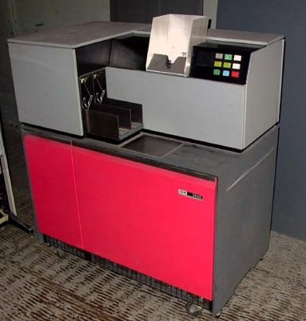
An IBM 1442 card reader (Source: Wikimedia Commons)
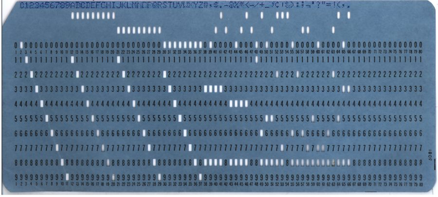
Hole pattern = character (Source: Wikimedia Commons)
Sequential Tape Storage
- Tape reels held huge data
- Had to read start to end
- No random access at all
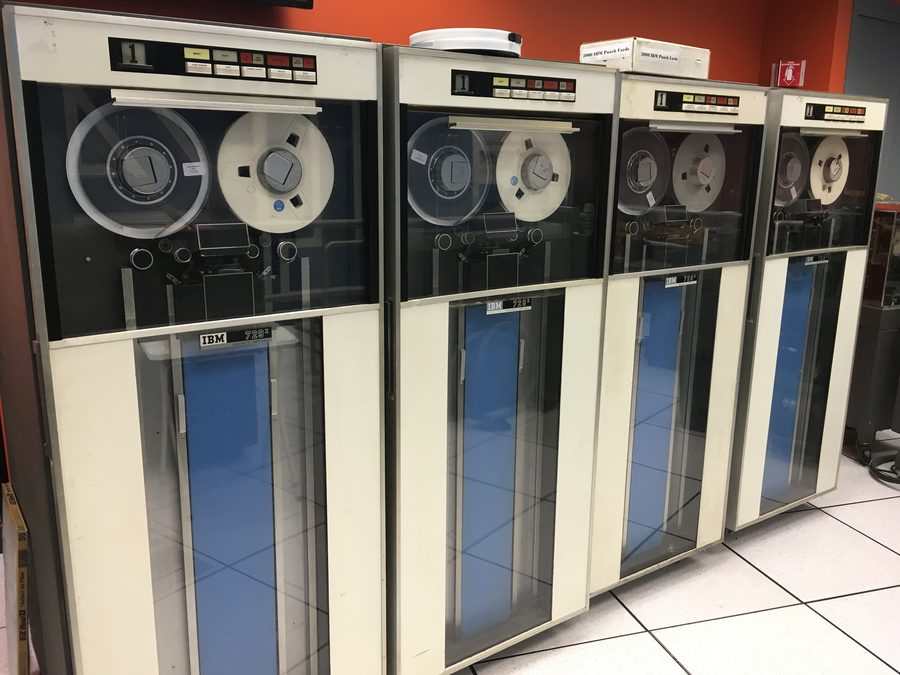
IBM 729 magnetic tape drives (Source: Wikimedia Commons)
The First Hard Disk
- IBM RAMAC shipped in 1956
- Fifty 24-inch spinning disks
- Enabled true random access
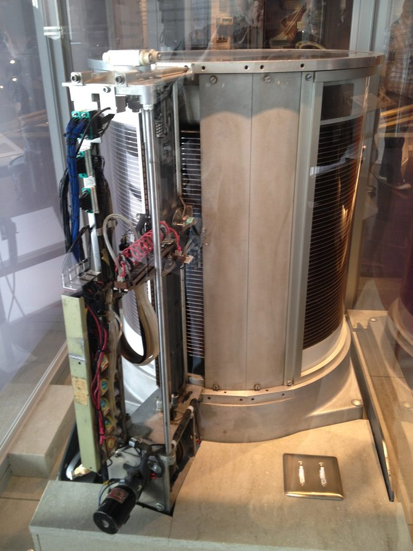
IBM 350 RAMAC disk mechanism (Source: Wikimedia Commons)
The Machine Unix Ran On
- PDP-11: a 1970s minicomputer
- Ran the first Unix systems
- Small enough for a lab
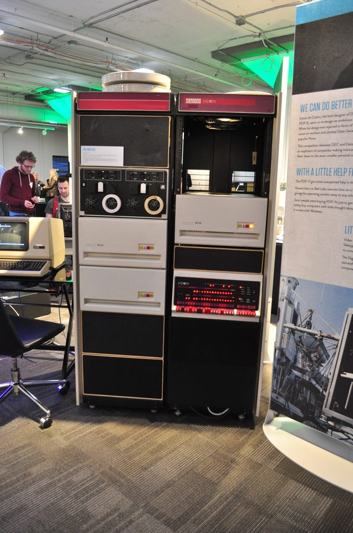
DEC PDP-11/70 minicomputer (Source: Wikimedia Commons)
What the OS Gives You
- Raw disk = just bytes
- The OS adds 6 real services
Creators of Unix
- Ken Thompson & Dennis Ritchie
- Built Unix at Bell Labs
- Also created the C language
- Hierarchical folders (1974)
- Permissions arrive (1971)
- Inodes track data (1971)
Ken Thompson & Dennis Ritchie, 1972 (Source: Wikimedia Commons)
Early Portable Storage
- 8-inch floppy, mid-1970s
- Held under 1 MB of data
- Introduced removable media
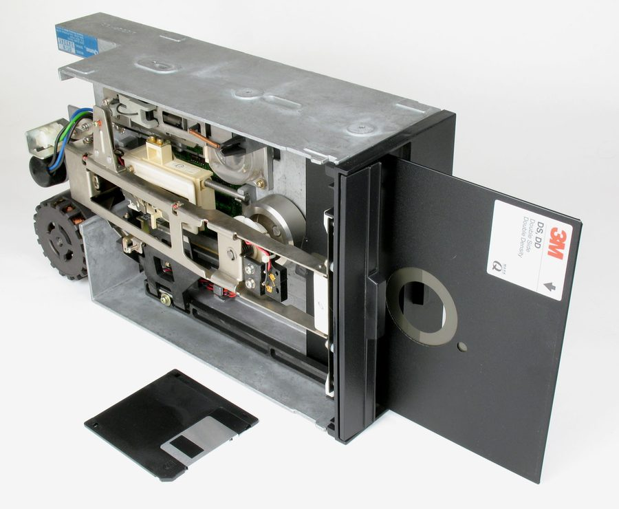
8-inch floppy disk (Source: Wikimedia Commons)
Floppy Disks Shrink
- 8in, 5.25in, then 3.5in
- Each shrink added capacity
- FAT tracked files on each
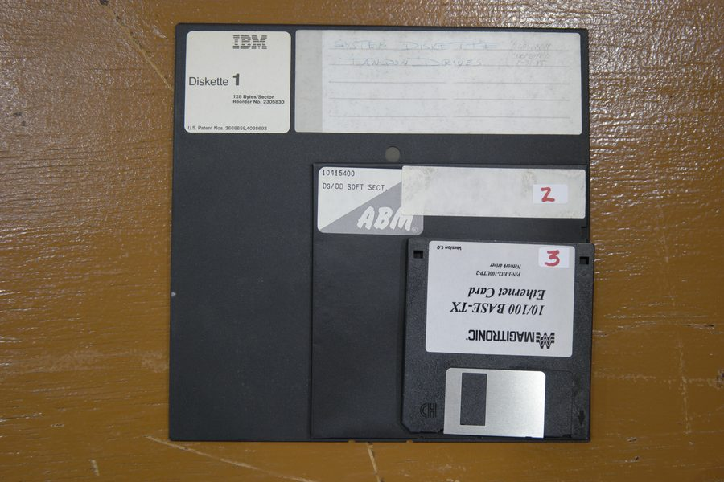
8-inch, 5.25-inch & 3.5-inch floppies (Source: Wikimedia Commons)
Linux's Creator (Kernel)
- Linus Torvalds, early 1990s
- Built Linux as a student
- ext2 followed a year later
- Volkerding: Slackware, 1993
- Murdock: Debian, same year
Linus Torvalds (Source: Wikimedia Commons)
Inside a Hard Disk
- Spinning platters store bits
- A head reads each track
- Mechanical, so it's slower
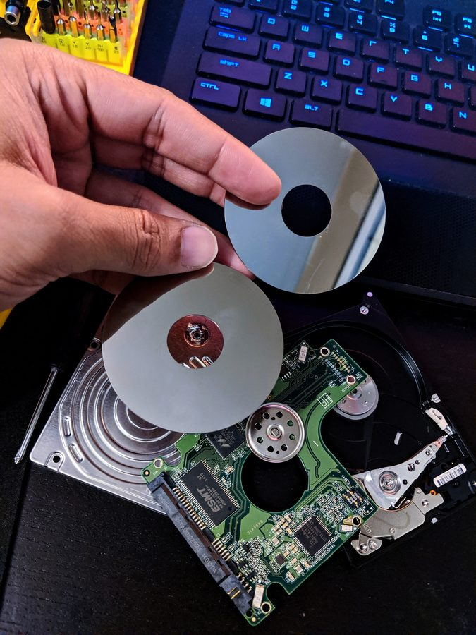
Laptop hard disk drive platters (Source: Wikimedia Commons)
Today's Storage: SSD
- No moving parts at all
- Much faster than a platter
- Now standard in laptops
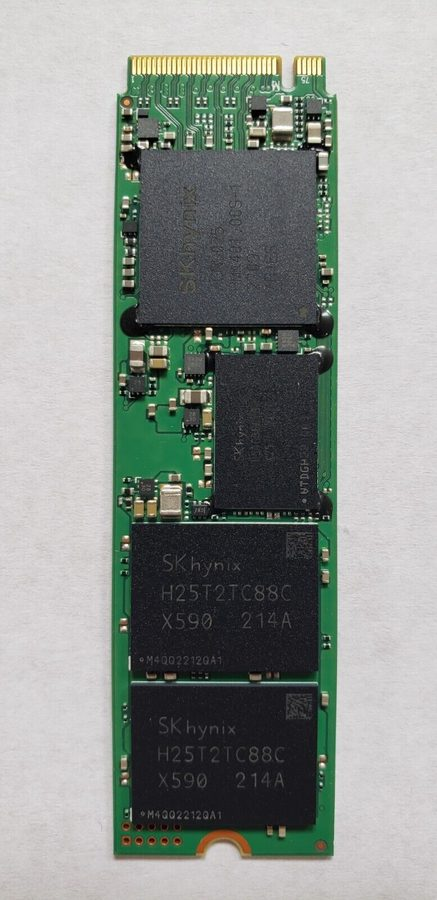
1TB NVMe M.2 SSD (Source: Wikimedia Commons)
What Is a File System?
- Organizes data on a disk
- Tracks names, sizes, locations
- Without it, disks are junk
Real File System Types
- Each OS has a default
- All are still hierarchical
- Format matters when sharing
| Name | Used By | Notable Trait |
| ext4 | Linux | Journaling, large volume support |
| NTFS | Windows | Built-in permissions, encryption |
| APFS | macOS | Snapshots, strong encryption |
| exFAT | Portable drives | Cross-platform, no journaling |
Which File System?
Which File System?
- df shows mounted file systems
- -h means human-readable
- Look at the Filesystem column
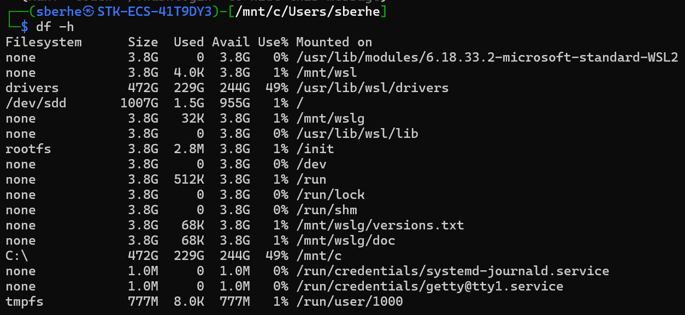
df -h on a real WSL2 terminal
| Filesystem | What It Is |
| none | Virtual, no real backing device |
| drivers | WSL2's shared driver mount |
| /dev/sdd | The real virtual disk (ext4) |
| rootfs | Initial boot filesystem |
| C:\ | Windows C: drive, shared in |
| tmpfs | Temporary, lives in RAM only |
Command: df -h
- Lists every mounted disk
- Shows size, used, free space
- -h: sizes in GB not bytes
Command: df -h
Command: mount
- Shows what's attached where
- Every drive needs one
- No output line = not mounted
Command: mount
Word Origin: "Mount"
- Attaching a disk to a folder
- Unreachable until mounted
- The folder is the mount point
Common File System Errors
- Wrong type = mount fails
- Full disk = writes fail
- Unmounted = path not found
| Error | Likely Cause | Fix |
| No space left on device | Disk is full | Free space or resize |
| Wrong fs type | exFAT tools missing | Install exfat-utils |
| Not a directory | Path doesn't exist yet | mkdir it first |
Word Origin: "Filesystem"
- Coined for early Multics work
- "File" + "system" of rules
- Now means the storage layer
Questions?
FHS Directory Standard
History of the FHS
- How old is this standard?
- See the real dates below
🔧 Admin task: Explains why an old server may still have legacy paths (e.g. symlinked /var/lock) an admin has to work around.
Why a Directory Standard?
- Software must predict paths
- Users must predict paths too
- Same rules across distros
🔧 Admin task: Lets an admin write one deploy script that works unmodified on any FHS-compliant box.
Read: page 1, FHS 3.0 — Chapter 1.1, Purpose
Gray = all 14, mandatory per FHS Sec. 3.2, none optional here
Who Actually Uses the FHS?
- Software vendors build to it
- OS makers: Ubuntu, Fedora
- Sysadmins rely on it daily
🔧 Admin task: When a package misbehaves, checking whether it violates FHS is a real first diagnostic step.
Read: page 1, FHS 3.0 — Chapter 1.1, Purpose
Gray = all 14; FHS Sec. 1.1 applies uniformly across them
What the FHS Does NOT Cover
- Local placement is local
- FHS won't override an admin
🔧 Admin task: An admin is free to lay out /srv/<project> however fits their own site, without violating the standard.
Read: page 1, FHS 3.0 — Chapter 1.1, Purpose
Orange = /srv, FHS's cited example of admin-defined layout (Sec. 3.17.1)
Reading FHS Notation
- <name> = a varying part
- [name] = an optional part
- * = any variable substring
🔧 Admin task: This same <angle-bracket> convention shows up in man pages and RFCs an admin reads constantly.
Read: page 1, FHS 3.0 — Chapter 1.2, Conventions
| Notation | Meaning | Example |
| <pkg> | Fill-in name | /opt/<pkg> |
| [.ext] | Optional piece | file[.ext] |
| * | Any substring | libc.so.* |
Real Distros That Follow It
- Debian, Ubuntu, Fedora
- RHEL, openSUSE, Arch
- All place files the same way
🔧 Admin task: An admin's muscle memory (chmod /etc/passwd, tail /var/log) transfers directly across distros.
Read: page 1, FHS 3.0 — Chapter 1.1, Purpose
Gray = all 14, identical across every FHS-compliant distro
Questions?
The Filesystem: Two Splits
Two Ways to Classify a File
- Shareable vs. unshareable
- Static vs. variable
🔧 Admin task: This exact classification is what an admin uses to decide backup frequency and mount policy.
Read: page 2, FHS 3.0 — Chapter 2
Gray = all 14, shown before the shareable/static split (next slide)
Shareable vs. Unshareable
- Shareable: OK on many hosts
- Unshareable: this host only
- Device lock files aren't
🔧 Admin task: Tells an admin which directories are safe to NFS-export to a whole lab without per-host conflicts.
Read: page 2, FHS 3.0 — Chapter 2
Orange = shareable, per FHS's own example table (Ch. 2): /usr, /opt
Static vs. Variable
- Static: binaries, libraries
- Only admin changes them
- Variable: changes on its own
🔧 Admin task: Tells an admin which directories are safe to put on read-only or cheaper/slower storage.
🎓 Design rationale: Why does the static/variable split matter for hardware, not just organization? Static data can physically live on read-only media (a burned disc, a read-only NFS mount) -- variable data cannot. The split isn't just tidiness; it constrains what storage is even usable.
Read: page 2, FHS 3.0 — Chapter 2
Orange = static, per FHS's own example table (Ch. 2): /usr, /opt, /etc, /boot
The FHS Example Table
- Combine both splits
- Four resulting categories
🔧 Admin task: This table is the quick reference an admin checks before choosing a storage tier for a new server.
Read: page 2, FHS 3.0 — Chapter 2
| Shareable | Unshareable | |
| Static | /usr, /opt | /etc, /boot |
| Variable | /var/mail | /var/run, /var/lock |
Why /var Split From /usr
- UNIX once mixed both types
- /var now separates them
- This lets /usr stay read-only
🔧 Admin task: Explains why an admin should never manually relocate data between /usr and /var -- the split is intentional.
Read: page 2, FHS 3.0 — Chapter 2
Orange = /var, split out so /usr could stay static (FHS Ch. 2 Rationale)
What This Buys Admins
- Back up /var often, not /usr
- Read-only /usr resists attack
🔧 Admin task: Concretely: point backup software at /var, and mount /usr read-only (mount -o remount,ro /usr).
Read: page 2, FHS 3.0 — Chapter 2, Rationale
Orange = /usr and /var, under opposite backup/mount policy (Ch. 2 Rationale)
Questions?
The Root Filesystem
Purpose of the Root FS
- Boots, restores, repairs it
- /usr, /opt, /var can move
- Root itself must stay put
🔧 Admin task: Tells an admin exactly what a minimal rescue/recovery partition must include.
🎓 Design rationale: Why must / stay small even with plenty of disk to spare? A corrupted root partition is a far bigger problem than a corrupted data partition -- keeping it minimal limits how much can go wrong in the one place the whole boot depends on.
Read: page 3, FHS 3.0 — Section 3.1, Purpose
Orange border = the root filesystem itself, per FHS Sec. 3.1
Required Root Directories
- 14 directories, always there
- Each has one specific job
🔧 Admin task: This is the checklist an admin walks when auditing a filesystem for non-standard or missing directories.
Read: page 4, FHS 3.0 — Section 3.2, Requirements
| Dir | Holds | Dir | Holds |
| bin | Commands | boot | Boot files |
| dev | Devices | etc | Host config |
| lib | Libraries | media | Removable |
| mnt | Temp mount | opt | Add-on apps |
| run | Runtime | sbin | Admin tools |
| srv | Service data | tmp | Temp files |
| usr | Secondary | var | Variable |
/bin: Commands for Everyone
- Works in single-user mode
- No subdirectories allowed
🔧 Admin task: These are the commands an admin can trust to work even in single-user/rescue mode during a repair.
Read: page 5, FHS 3.0 — Section 3.4.1-3.4.2
| Command | Job |
| ls, cp, mv, rm | File basics |
| chmod, chown | Permissions |
| mount, df | Filesystems |
/etc: No Binaries Allowed
- Must be static, plain-text
- No binaries; scripts are OK
🔧 Admin task: Because it's guaranteed plain-text, an admin can always git-diff or grep /etc safely to audit config drift.
🎓 Design rationale: Why can't /etc contain binaries? Config files there must be readable and diffable by tools (and by an admin's own eyes) before any package manager has verified binary integrity -- a binary hiding in /etc would defeat the entire point of the directory.
Read: page 7, FHS 3.0 — Section 3.7.1-3.7.2
| File | Purpose |
| passwd | User accounts |
| group | Group list |
| fstab | Filesystem info |
| hosts | Hostname map |
/home vs. /root
- /home: optional, per-site
- /root: home for root user
🔧 Admin task: Tells an admin where to find a locked-out user's files vs. the root account's own history and crontab.
🎓 Design rationale: Why is /home optional, not required? Because its real layout varies too much across deployments (NFS-mounted, subdivided by department, or absent on an embedded system) for FHS to mandate one fixed path -- so it stays a strong default, not a hard rule.
Read: page 10, FHS 3.0 — Sections 3.8.1, 3.14.1
Orange = /home, /root, both optional per FHS Sec. 3.8.1 and 3.14.1
What This Means for Users
- Files survive OS reinstalls
- Dotfiles keep ls output clean
🔧 Admin task: Config-management tools (Ansible, Puppet) target ~/.config for exactly this reason -- it's the FHS-defined spot.
Read: page 10, FHS 3.0 — Sections 3.8.1-3.8.2
Orange = dot-prefixed entries per FHS Sec. 3.8.2; docs is not one
/opt: Add-On Software
- Big 3rd-party apps live here
- Own tree: /opt/<package>
- Never scattered into /usr
🔧 Admin task: This is the first place an admin checks (or cleans up) when auditing third-party software installs.
🎓 Design rationale: Why does FHS require a registered provider name for /opt subdirs? To prevent collisions -- if two unrelated vendors both name their tree /opt/tools, one silently overwrites the other; a registered (often reverse-DNS-style) name guarantees it's unique.
Read: page 13, FHS 3.0 — Section 3.13.1
Orange = /opt/<package>, the required static-objects subtree (Sec. 3.13.2)
/media vs. /mnt
- /media: removable disks
- /mnt: admin's manual mounts
🔧 Admin task: Scripts should target /mnt for a scheduled backup mount; leave /media for automatic removable-media handling.
Read: page 12, FHS 3.0 — Sections 3.11.1, 3.12.1
Orange = /media, /mnt, FHS's two mount-point directories (Sec. 3.11.1, 3.12.1)
/run: What's Happening Now
- Data since the last boot
- Cleared every time it boots
- Replaces old /var/run PIDs
🔧 Admin task: After a crashed daemon, an admin checks /run for a stale PID file -- and it's always safe to clear on reboot.
🎓 Design rationale: Why did FHS introduce /run instead of just keeping /var/run? Because /var might not be mounted yet very early in boot, but PID/socket data is needed before that -- /run is its own tmpfs directly on /, so it's guaranteed available from the earliest boot stage.
Read: page 14, FHS 3.0 — Section 3.15.1-3.15.2
Orange = /run, holding data since the current boot (FHS Sec. 3.15.1)
Questions?
The /usr Hierarchy
/usr: Shareable, Read-Only
- Same /usr on many machines
- Must never be written to
- Host data lives elsewhere
🔧 Admin task: Confirms it's safe practice to mount /usr read-only (mount -o remount,ro /usr) on a production server.
🎓 Design rationale: Why must /usr be read-only, not just 'usually is'? Because it's often mounted from one shared NFS server onto many clients at once -- a write from any one client would corrupt or race against every other client reading that same tree simultaneously.
Read: page 18, FHS 3.0 — Section 4.1
Orange = /usr, the directory FHS Sec. 4.1 forbids writing to
Read-Only /usr: Security
🔴 Red Team: A writable /usr lets a compromised process silently replace ls, sudo, or ssh with a backdoored copy.
🔵 Blue Team: Mount /usr read-only in production; any change to it becomes a loud, detectable event.
Required /usr Directories
- 5 directories, always there
🔧 Admin task: This is the checklist an admin uses to spot a package that installed itself somewhere it shouldn't have.
Read: page 18, FHS 3.0 — Section 4.2
| Dir | Holds |
| bin | Most user commands |
| lib | Libraries |
| local | Admin's own installs |
| sbin | Non-vital admin tools |
| share | Arch-independent data |
/usr/local: Update-Safe
- For hand-installed software
- Survives every system update
🔧 Admin task: ./configure --prefix=/usr/local is the correct install target for anything an admin compiles by hand.
🎓 Design rationale: Why must locally-installed software avoid /usr specifically, not just prefer /usr/local? A package manager tracks and may remove anything it believes it owns under /usr -- a hand-installed file there risks silent deletion on the next system upgrade.
Read: page 21, FHS 3.0 — Section 4.9.1
Orange = /usr/local, exempt from overwrite on update (FHS Sec. 4.9.1)
/usr/bin vs. /usr/sbin
- /usr/bin: everyday commands
- /usr/sbin: admin-only tools
🔧 Admin task: Tells an admin which commands are safe to expose in a restricted user's $PATH vs. keep admin-only.
Read: page 18, FHS 3.0 — Sections 4.4.1, 4.10.1
Orange = /usr/bin, /usr/sbin, both defined in FHS Sec. 4.4.1 and 4.10.1
/usr/share: Shared Data
- Shared across one OS release
- Man pages, dicts, timezones
🔧 Admin task: Safe to NFS-share across a whole lab of mixed-architecture machines without per-host duplication.
Read: page 22, FHS 3.0 — Section 4.11.1
Orange = /usr/share, architecture-independent per FHS Sec. 4.11.1
Man Pages: 8 Real Sections
- Every page has a section #
- 8 sections total, 1 to 8
🔧 Admin task: man 5 crontab vs. plain man crontab -- knowing the section jumps straight to the file-format docs an admin needs.
Read: page 24, FHS 3.0 — Section 4.11.6.1
| # | Covers |
| 1 | User programs |
| 4 | Special/device files |
| 5 | File formats |
| 8 | System admin tools |
Questions?
The /var Hierarchy
/var: Where the Changes Go
- Spool data, logs, temp files
- Lets /usr stay read-only
🔧 Admin task: This is the directory an admin puts a disk-space monitoring alert on -- it's the one that actually fills up.
Read: page 30, FHS 3.0 — Section 5.1
Orange = /var, the one root dir defined as variable data (FHS Sec. 5.1)
Required /var Directories
- 9 directories, always there
🔧 Admin task: This is the checklist an admin walks when deciding separate partitions or quotas for logs vs. spool data.
Read: page 30, FHS 3.0 — Section 5.2
| Dir | Holds | Dir | Holds |
| cache | Regenerable | lib | App state |
| local | For /usr/local | lock | Lock files |
| log | Log files | opt | For /opt |
| run | Runtime state | spool | Awaiting work |
| tmp | Persists reboots |
/var/log: What's Recorded
- Most logs live in /var/log
- Some use a subdirectory
🔧 Admin task: lastlog and wtmp (read via last) are the first two files an admin checks investigating a suspicious login.
Read: page 36, FHS 3.0 — Section 5.10.1-5.10.2
| File | Records |
| lastlog | Each user's last login |
| wtmp | Every login/logout |
| messages | syslogd output |
/tmp vs. /var/tmp Revisited
- /tmp: gone at next reboot
- /var/tmp: survives reboots
- Cleared less often overall
🔧 Admin task: A long-running batch job's temp files belong in /var/tmp, so a reboot mid-job doesn't silently wipe them.
Read: page 38, FHS 3.0 — Section 5.15.1
Orange = /tmp, /var (stands in for /var/tmp), contrasted in Sec. 5.15.1
/var/spool: Work To Be Done
- Data waiting on a process
- Deleted once handled
🔧 Admin task: When a print job or an outgoing email seems stuck, /var/spool/<service> is where an admin looks first.
Read: page 37, FHS 3.0 — Section 5.14.1
| Dir | Queue for |
| mqueue | Outgoing mail |
| lpd | Print jobs |
| news | Usenet news |
/var/lib & /var/mail
- /var/lib: app state data
- /var/mail: one file/user
🔧 Admin task: Never hand-edit files under /var/lib; a service's own tooling owns that data. /var/mail/<user> is the real mailbox.
🎓 Design rationale: Why is a mailbox one flat file, not a folder of messages? FHS mandates the classic UNIX mbox format for compatibility with decades of existing mail tooling -- a maildir-style folder tree is a newer alternative some servers use, but it's not what FHS itself defines.
Read: page 33, FHS 3.0 — Sections 5.8.1, 5.11.1
Orange = /var/lib, /var/mail, per FHS Sec. 5.8.1 and 5.11.1
Backup Strategy: /var First
- /usr: just reinstall it
- /var: real, unique data
🔧 Admin task: If disk space is tight, an admin can safely skip backing up /usr -- apt/yum reinstall it in minutes.
Read: page 30, FHS 3.0 — Section 5.1, Rationale
Orange = /usr, /var, under contrasting backup priority (Sec. 5.1 Rationale)
Questions?
Linux-Specific Rules
/proc & /sys: Virtual Trees
- Not real files on disk
- /proc: process + kernel info
- /sys: devices and drivers
🔧 Admin task: cat /proc/cpuinfo or /proc/meminfo gives live diagnostics with zero extra tools to install.
🎓 Design rationale: Why does Linux have both /proc and /sys? /proc came first (process/kernel info, somewhat unstructured over time); /sys was added later specifically to expose device and driver data in a clean, versioned, machine-parseable hierarchy /proc had never enforced.
Read: page 40, FHS 3.0 — Sections 6.1.5, 6.1.7
Orange = /proc, /sys, Linux-annex virtual filesystems (Sec. 6.1.5, 6.1.7)
3 Devices Every Linux Needs
- FHS requires these exactly
🔧 Admin task: Safe in any script on any Linux box: 2>/dev/null to silence errors, or dd if=/dev/zero to wipe a disk.
Read: page 39, FHS 3.0 — Section 6.1.3
| Device | Does |
| /dev/null | Discards all writes |
| /dev/zero | Endless zero bytes |
| /dev/tty | Your own terminal |
Linux-Only Extras
- setserial goes in /bin
- lilo.conf goes in /etc
- Not required on every UNIX
🔧 Admin task: A portable admin script shouldn't assume these exist -- check for them before relying on Linux-only files.
Read: page 39, FHS 3.0 — Sections 6.1.2, 6.1.4
Orange = /bin, /etc, gaining Linux-only files per Sec. 6.1.2, 6.1.4
/sbin Extras: ldconfig
- Rebuilds the library cache
- Runs after any lib upgrade
🔧 Admin task: Forget to run ldconfig after copying a new .so by hand, and every program linking it fails at runtime.
Read: page 40, FHS 3.0 — Section 6.1.6
Orange = ldconfig, the command this slide covers (FHS Sec. 6.1.6)
cron & at: Scheduled Jobs
- Holds data for cron and at
- All scheduled jobs live here
🔧 Admin task: When a scheduled job silently stops running, this is the directory an admin checks for the actual job entry.
Read: page 41, FHS 3.0 — Section 6.1.10
Orange = /var/spool/cron, storing both cron and at data (FHS Sec. 6.1.10)
Questions?
Everything Is a File
Everything Is a File
- Unix's biggest idea
- Same commands work on all
- Simplifies the whole OS
A Disk Is a File
- /dev/sda is your whole disk
- ls -l shows it like any file
- Reading it reads raw bytes
A Disk Is a File
Processes Are Files
- /proc exposes running programs
- Each process gets a folder
- Files inside are readable
Processes Are Files
Command: file
- Not installed by default
- Create the file if missing
- Identifies a file's real type
Command: file
Special Files at a Glance
- Each path exposes something
- None are "real" disk files
- The OS generates them live
| Path | What It Really Is |
| /dev/sda | The physical disk itself |
| /proc/1 | Info about process ID 1 |
| /dev/null | A file that discards everything |
dev = device · proc = process · sda = SCSI/SATA disk A (1st disk) · null = the null device
Word Origin: "Inode"
- Short for "index node"
- Holds a file's metadata
- The filename lives elsewhere
Reading a File's Metadata
- ls -l already shows some
- -i also prints the inode
- Full detail comes later
| Field | Meaning |
| 130910 | Inode number (unique ID) |
| -rw-r--r-- | Permissions |
| 1 | Hardlink count |
| admin admin | Owner, then group |
| 21 | Size in bytes |
| notes.txt | The filename |
⚠️ On /mnt/c paths, WSL2 often shows huge inode numbers and -rwxrwxrwx for everything -- Windows drives don't track real Unix permissions.
Reading a File's Metadata
What's Inside an Inode?
- Size, owner, permissions
- Timestamps (access, modify)
- Pointer to the data blocks
Symlink vs. Hardlink
Symlink vs. Hardlink
- Symlink: a pointer to a path
- Hardlink: shares the inode
- Table below compares both
| Type | Own Inode? | Breaks If Target Moves? |
| Symlink | Yes (its own) | Yes |
| Hardlink | No (shares one) | No |
How Links Point
- Symlink = symbolic link
- It stores a path string
- Not a link to the inode
- Hardlink = a second name
- Same inode, same data
A symlink points at a name; a hardlink is a name for the inode
Link Count on Delete
- Inode holds a link count
- rm one name: count drops 1
- Data lives while count > 0
- Last rm: inode + data freed
- Symlink is not on the count
- Delete its target: it dangles
The data is freed only when the last hardlink is removed
Create & Access Both
Symlink
Hardlink
⚠️ Same inode (130910) for the hardlink; the symlink gets its own.
Delete the Original
Symlink
Hardlink
⚠️ The symlink now points at a dead path -- rm only removes one name, not the data; the hardlink survives as long as its link count stays above zero.
Delete the Original
Symlink
Hardlink
Word Origin: "Symlink"
- Short for "symbolic link"
- Added to give shortcuts
- Works across file systems
Why Symlinks & Hardlinks?
- Names already locate files
- So why need links at all?
- One file, many paths
- Hardlinks save real space
- Symlinks cross drives/paths
- Swap targets, keep same name
Why This Matters
- Wrong access exposes the disk
- Bad permissions are dangerous
- Restrict device files to root
🔴 Red Team: A world-writable /dev/sda lets an attacker overwrite the whole disk directly.
🔵 Blue Team: Restrict device files to root/disk group; never widen /dev permissions.
Questions?
Ownership: Owner & Group
Multi-User History
- Unix always was multi-user
- Ownership prevents conflicts
- Groups let teams share safely
Ownership, Revisited
- Ownership lives in the inode
- Directory only holds the name
- Metadata travels with the file
Anatomy of ls -l Output
- Permissions come first
- Then owner, group, size, etc.
- Order never changes
| Field | Example | Meaning |
| Permissions | -rw-r--r-- | type + rwx x3 |
| Links | 1 | hardlink count |
| Owner | admin | who owns it |
| Group | devteam | shared group |
| Size | 482 | bytes |
| Name | config.yml | the filename |
Command: stat
- Create the file if missing
- Shows far more than ls -l
- Includes the inode number
Command: stat
Inode Metadata Revisited
- stat reads the inode directly
- ls -l only shows a summary
- Same data, more detail
Command: id
- Shows your numeric identity
- uid = your user number
- gid = primary group number
Command: id
Word Origin: "UID & GID"
- Numeric ID behind every name
- root is always UID 0
- Names are just a lookup table
Practice: Who Owns This?
- -rw-r----- alex staff notes
- Who is the owner?
- Who is the group?
Orange = owner (alex) and group (staff), the two fields this line asks about
Owner & Group
alex : staff
Recall: chown Changes This
- Module 2 already used chown
- chown user:group file
- Now you know WHY it matters
Recall: chown Changes This
Command: groups
- Lists every group you're in
- First is your primary group
- Others are secondary groups
Command: groups
Why Ownership Matters
🔴 Red Team: A misconfigured owner can leave secrets readable by any account on the box.
🔵 Blue Team: Audit ownership on sensitive files regularly; prefer dedicated service accounts.
Questions?
Permission Bits: rwx
Who Should Read This?
- Not all data should be public
- Some scripts must stay locked
- Wrong access causes breaches
Orange = owner and group, who CAN read this file; Other cannot
Read, Write & Execute
- rwx means different things
- on a file vs. a folder
- x on a folder = can enter it
| Letter | On a File | On a Folder |
| r | Read contents | List contents |
| w | Edit contents | Add/remove files |
| x | Run as a program | Enter with cd |
The Numeric Version
- r = 4, w = 2, x = 1
- Add them up per role
- rwx = 4+2+1 = 7
| Letter | Value |
| r | 4 |
| w | 2 |
| x | 1 |
| - | 0 |
What Number Is r--?
- Read only, nothing else
- w and x are both off
- Add the letter values
4
What Number Is r-x?
- Read and execute
- Write is off
- Add the letter values
5
What Number Is rw-?
- Read and write
- Execute is off
- Add the letter values
6
What Number Is rwx?
- All three are on
- Read, write, execute
- Add the letter values
7
Symbolic vs. Octal
- Letters or a digit, same idea
- chmod accepts either form
- Octal is faster to type
| Symbol | Octal | Meaning |
| rwx | 7 | read + write + execute |
| rw- | 6 | read + write |
| r-x | 5 | read + execute |
| r-- | 4 | read only |
Recall: chmod Sets This
- Module 2 already used chmod
- chmod 770 file sets rwxrwx---
- Now you know why it's 7
Questions?
Practice Lab: Library
Scenario: The Library
- You run the library file share
- You do this on your own VM
- Use your own real terminal
Orange = /srv, where this lab's shared folder will actually live
Two Phases
- First: build it solo
- Then: fix it as a team
- Same VM, same share
Orange = the team phase you finish on
Three Library Roles
- Cataloging: adds records
- Circulation: check in / out
- Archives: long-term store
Roles will map to subfolders in Phase 2
Phase 1: Build the Share
Step 1: Make Library Dir
- A shared folder for the lib
- sudo needed for /srv
- -p: no error if it exists
Step 1: Make Library Dir
Step 2: Check Who Owns It
- New folders start as root
- -d: the dir, not contents
- Not usable by you yet
Step 2: Check Who Owns It
Check: Can You Write Yet?
- You made /srv/library
- Owner and group are root
- You are only "other" here
Answer: other has no w, so writes fail
Step 3: Create the Group
- One group for all lib staff
- Every staff account joins it
- groupadd needs sudo
Step 3: Create the Group
Step 4: Join the Group
- -aG appends, never replaces
- Log out/in for it to apply
- groups confirms membership
Step 4: Join the Group
Check: Group Not Active
- usermod added you to libstaff
- Your shell has the old groups
- What re-reads your groups?
Answer: group loads at the next login
Roles, Not People
- Do not grant users one by one
- Grant a role, add users to it
- In Linux a group is a role
Orange = the role layer, the one thing you manage
Groups Are the Roles
- libstaff: every staff account
- cataloging / circ / archives
- One person can hold many
Each sub-team is its own group under libstaff
Why RBAC Scales
- New hire: add to one group
- Role changes: swap one group
- Audit = list group members
Orange = RBAC: manage roles, not user-folder pairs
Users, Roles, Permissions
- A user is put into roles
- A role is a Linux group
- Permissions sit on the role
- carol holds two roles
- Never grant a user a file
Dashed line: one user can hold more than one role
Step 5: Change Group Owner
- Recall: chown changes both
- chgrp changes just the group
- Owner (root) stays the same
Step 5: Change Group Owner
Step 6: Set Permissions
- 770: owner + group, no other
- You already know this number
- r+w+x = 7 for both roles
Step 6: Set Permissions
Check: What Does 770 Do?
- You set the share to 770
- Split it into three digits
- Which role gets nothing?
Answer: owner and group full, other none
Check: What Does 000 Do?
- You run chmod 000 on it
- Owner, group, other: ---
- Can even the owner open it?
Answer: nobody gets in; root and the owner can chmod it back
Step 7: Verify With ls -l
- Confirm before moving on
- Group should now be libstaff
- Permissions should read 770
Step 7: Verify With ls -l
Step 8: Create the File
- A real file inside the share
- touch only creates it, empty
- Everyone in libstaff can use
Step 8: Create the File
Check: Which Group?
- You ran touch catalog.txt
- Files take your primary group
- Is that libstaff or staff?
Answer: primary group, not libstaff yet
Step 9: Check Its Metadata
- Shows owner, inode, and time
- Proves the file truly exists
- More detail than ls -l alone
Step 9: Check Its Metadata
Step 10: Identify File Type
- Confirms it truly has no data
- Not just trusting the name
- Not installed by default
Step 10: Identify File Type
Check: Name vs Content
- The name ends in .txt
- file read the bytes instead
- Why not trust the name?
Answer: a name is a label, not proof
Step 11: Create a Symlink
- A shortcut in your own home
- Points at the shared file
- ls -l shows the -> target
Step 11: Create a Symlink
Step 12: Create a Hardlink
- A second name, same data
- Survives if original deleted
- Not a shortcut, real data
Step 12: Create a Hardlink
Check: Delete the Original
- A hardlink shares the inode
- A symlink stores only a path
- You delete catalog.txt
- Which one still opens?
Answer: backup opens; the symlink now points at nothing
Step 13: Compare the Inodes
- Both list the same number
- Proves they share one file
- The symlink's number differs
Step 13: Compare the Inodes
Step 14: Check Mount Point
- Confirms which disk /srv uses
- Same idea as Module 3, Item 1
- Look at the Mounted on column
Step 14: Check Mount Point
Check: /srv On What Disk?
- df -h /srv shows /dev/sda1
- Mounted on column reads /
- Is /srv its own disk?
Answer: no: /srv rides on the root disk
Step 15: Diagnose an Error
- A classmate reports an error
- "Permission denied" error
- Check the folder, not the file
⚠️ Group lost its rwx bits -- someone ran chmod 700 by mistake.
Step 15: Diagnose an Error
Step 16: Fix Permissions
- g+rwx adds back group access
- Safer than retyping 770
- Practice with symbolic chmod
Step 16: Fix Permissions
Check: Symbolic vs Numeric
- chmod g+rwx added group bits
- chmod 770 sets all three roles
- When is g+rwx the safer pick?
Answer: g+rwx leaves owner and other alone
Phase 1: What You Built
- /srv/library, group libstaff
- Mode 770, a real file inside
- One symlink, one hardlink
This is your Phase 1 end state
Now Work As a Team
Phase 2: Solve It Together
How Phase 2 Works
- Each of you on your own VM
- Talk through the approach
- Try it, then check the key
- Answers follow all 10
Orange = the answer key at the end
Problem 1: New Staff
You were added to libstaff in Phase 1, but this shell opened before that, so writing to /srv/library still fails. Run newgrp libstaff (or log out and back in), then create a file in the share. In one sentence, say why the first attempt failed.
The shell opened before the group was added
Problem 2: Wrong Group
Cataloging made records.txt with group staff, so Circulation cannot edit it. Run sudo chmod g+s /srv/library so new files inherit libstaff, and fix the old file with sudo chgrp libstaff records.txt. Check that a brand-new file now shows group libstaff.
New files inherit the creator primary group
Problem 3: Anyone Deletes
Everyone in libstaff has write on the share, so anyone can delete anyone's file. Add the sticky bit: sudo chmod +t /srv/library. Now try to delete a file a teammate owns — it should be refused. Confirm ls -ld shows drwxrws--T.
Deleting a file needs write on the folder
Problem 4: Legacy Folder
The archives folder predates setgid, so its group is root and new files there miss libstaff. Fix the old files with sudo chgrp -R libstaff /srv/library/archives, then re-apply setgid: sudo chmod g+s /srv/library/archives. Verify with ls -lR that every line reads libstaff.
setgid only affects files made after it was set
Problem 5: Broken Link
~/today.txt is a symlink showing red and "No such file" because its target was renamed. Run ls -l ~/today.txt to see the path it stores, then re-point it: ln -sfn /srv/library/<real-name> ~/today.txt. Confirm cat ~/today.txt works again.
A symlink stores a path string, not the file
Problem 6: Disk Is Full
df -h /srv reads 96% full. Archives made hardlink backups (cheap) but also cp-d some originals (real bytes). Run du -sh * in each folder and ls -li to spot files that share an inode. Report which files are true copies eating the space.
Hardlinks add a name only; copies add real data
Problem 7: Wrong Disk
/srv/library is on the small root disk; a big /data disk is mounted. Write the ordered move: sudo mv /srv/library /data/library, then sudo ln -s /data/library /srv/library so the old path still works. Note which links break (hardlinks) and which survive (symlinks, data).
Inodes are per-filesystem; hardlinks cannot cross a mount
Problem 8: Read a Subdir?
circulation is set to 750 and Archives is in libstaff. Split 750 into owner / group / other and read the group digit (5 = r-x). Answer: can an Archives user cd into circulation and ls it? Can they add a file?
7 = rwx, 5 = r-x, 0 = --- : the group column decides
Problem 9: Root Owns It
policy.txt is -rw-r--r-- owned by root and staff must edit it. Do NOT run chmod 666 (that lets the whole world write). Instead: sudo chgrp libstaff policy.txt then sudo chmod g+w policy.txt. Confirm it ends -rw-rw-r--.
chmod 666 would let the whole world write the policy
Problem 10: Final Audit
Produce one ls -lR /srv/library and explain every line: for each directory and file, say what the mode string grants and to whom (owner, libstaff, other). State clearly what "other" is allowed to do (nothing).
This is the state built across Problems 1 to 9
Answer Key
Answer 1: New Staff
- Groups load at login only
- newgrp libstaff or re-login
- id must list libstaff
- Then 770 lets them write
A fresh login re-reads group membership
Answer 2: Wrong Group
- Set setgid on the dir
- chmod g+s /srv/library
- New files inherit libstaff
- Old files: chgrp -R libstaff
setgid on a directory forces its group onto new files
Answer 3: Anyone Deletes
- Add the sticky bit
- chmod +t /srv/library
- Only owner or root unlinks
- ls shows drwxrws--T
The sticky bit limits deletion to each file owner
Answer 4: Legacy Folder
- chgrp -R libstaff archives
- chmod -R g+w archives
- Re-set setgid on the dir
- Verify with ls -lR
Recursive chgrp fixes old files; setgid fixes new ones
Answer 5: Broken Link
- Holds a path, not an inode
- ln -s new-name ~/today.txt
- Or restore the old filename
- A hardlink survives a rename
Point the link at the new name, or rename the target back
Answer 6: Disk Is Full
- Hardlinks share blocks: ls -li
- du counts shared data once
- The cp copies are the cost
- Delete copies, keep the links
Two copies use twice the blocks; two hardlinks use one set
Answer 7: Wrong Disk
- Move dir to /data/library
- Leave /srv/library as a link
- Hardlinks break: recreate them
- Symlinks and data survive
A symlink at the old path keeps every reference working
Answer 8: Read a Subdir?
- Group gets r-x on the dir
- r lets them ls the names
- x lets them cd into it
- No w: they cannot add files
Read plus execute on a directory means list and enter, not modify
Answer 9: Root Owns It
- sudo chgrp libstaff policy.txt
- sudo chmod g+w policy.txt
- Now -rw-rw-r--
- Other stays read-only
Give the group write through group ownership, never through other
Answer 10: Final Audit
- Dirs: drwxrws--T, grp libstaff
- s=setgid, T=sticky, no other
- Files: -rw-rw----, libstaff
- World: no access anywhere
setgid keeps the group, sticky guards deletes, other is shut out
Team Debrief
- setgid + sticky = safe share
- Links: path vs inode
- df / du before blaming backups
- Group write, never world write
Every role folder now shares safely
Phase 3: Design It on Paper
The Dining Hall
- Campus dining hall, its data
- You design the file layout
- On paper only, no VM here
Same skills as Phase 1, a new scenario
Draw the Folder Tree
- List every folder you need
- Group data by who uses it
- Give each folder a clear name
One folder per kind of record
Name the Roles
- One group per job role
- kitchen: menus & recipes
- cashiers: the POS records
- managers: reports & staff
- diners: read the menu only
In Linux a group is the role
Set the Permissions
- Mark rwx per role per folder
- setgid keeps the group
- sticky where all can write
- menus folder: diners r--
Same 770 / setgid / sticky as Phase 1
Add Sample Files
- Put 2-3 files per folder
- week1-menu.md, chili.recipe
- swipes-2026.csv under pos
- Note who owns each file
Real names make the design concrete
What to Back Up?
- Circle the folders to back up
- recipes, pos, staff, reports
- Skip caches and temp files
- Where does changing data live?
Back up what you cannot recreate
How Is It Used?
- Which folder is read all day?
- Which spikes at lunch rush?
- Which needs the tightest lock?
- Where do the logs go?
Access pattern shapes the design
Phase 3 Deliverable
- Hand in your paper diagram
- A roles + permissions table
- Your backup list
- Your usage notes
One page or a photo, on Canvas
Phase 4: Class Project
Get the Repo
- One repo for the whole class
- Pull it onto your VM
- Work lives in module-3
Get the Repo
Task 1: Build /srv/library
- mkdir, group, join, chgrp
- chmod 3770: setgid + sticky
- stat reads drwxrws--T
The Phase 1 + 2 end state, rebuilt for real
Task 2: Role Folders
- mkdir the three subdirs
- chgrp -R libstaff /srv/library
- chmod 3770 on each one
Each role folder matches the parent
Task 3: Deploy Scripts
- cp catalog-scripts/*.py in
- chgrp libstaff, chmod 750
- Run add_book.py to test it
Real scripts, group-owned by libstaff
Task 4: Admin Banner
- Append dotfiles/.bashrc
- source it, open a new shell
- Explain every line it prints
A real login habit: who am I, is the disk full
Task 5: Break and Diagnose
- chmod 700 a role folder
- Or break a symlink target
- Write how you found the fix
Two or three sentences: how you diagnosed it
Task 6: Run verify.sh
- bash class-project/verify.sh
- Every line must read PASS
- Fix each FAIL, run it again
- Ends: All checks passed.
Green across the board means the share is done
Project Deliverable
- ls -lR /srv/library output
- verify.sh output, all PASS
- Your banner + Task 5 write-up
- One line per permission string
One text file or PDF, submitted on Canvas
Deliverables
- Shared folder, group, 770
- Symlink and hardlink both work
- Ready when instructor checks
Orange = catalog.txt, its hardlink (-backup), and its symlink (-link)
Questions?
Assignment
Q1: Role of a Sysadmin
- Explain the sysadmin role
- Name one history milestone
- Include its year
- Manages systems and servers
- Handles accounts and security
- 1950s: Computer Operators
- ran mainframes by hand
Source: Module 1 slides (The Sysadmin Role timeline)
Q2: Linux vs. Unix
- Compare Linux and Unix
- Give 2 similarities
- Give 1 legal difference
- Both: hierarchical file trees
- Both: multi-user, multitask
- UNIX = registered trademark
- Linux = free, GPL-licensed
Source: class slides (Unix vs. Linux comparison)
Q3: What Is Virtualization?
- Define virtualization
- Explain why it's "virtual"
- One host runs many guests
- CPU/RAM/disk get divided up
- Not physical, but still real
- From Latin "virtus" (power)
Source: virtualbox.org/manual, Introduction
Q4: VirtualBox vs. WSL2
- List 5 differences
- install, VM window,
- resources, hypervisor type
- Install: package vs. wsl cmd
- GUI manager vs. CLI only
- Fixed vs. dynamic resources
- Type 2 vs. Type 1 hypervisor
- Separate disk vs. shared files
Source: Module 1 slides, learn.microsoft.com/windows/wsl, virtualbox.org/manual
Q5: Virtual Hardware
- Explain vCPU, vRAM,
- vDisk, and vNIC
- Why needed on the host?
- vCPU: sliced host CPU time
- vRAM: reserved host memory
- vDisk: a file acting as disk
- vNIC: a virtual network link
- Shares real hardware safely
Source: Module 1 slides, virtualbox.org/manual
Q6: Snapshots
- Define a snapshot
- Give a University example
- Saves a VM's exact state
- Disk, settings, sometimes RAM
- Example: registration server,
- snapshot before a big update
- Restore fast if it breaks
Source: virtualbox.org/manual, vboxmanage snapshot
Q7: Kernel, GNU & Distro
- Define kernel, GNU,
- and distro
- Kernel: manages hardware
- GNU: free tools + Linux
- Distro: kernel + GNU + tools
Source: kernel.org, class slides (Word Origin: GNU)
Q7: Ubuntu, Debian & Fedora
- Compare 3 distros:
- package manager, cycle,
- and typical use case
| Distro | Package | Cycle | Use Case |
| Ubuntu | APT | 6mo / 2yr LTS | Beginners, servers |
| Debian | APT | ~2yr, stable | Reliable servers |
| Fedora | DNF | ~6mo | Developers, new tech |
Source: distrowatch.com, major distributions
Q8: Host OS vs. Guest OS
- Define host vs. guest OS
- Name one security risk
- Host: runs on real hardware
- Guest: runs inside a VM
- Risk: 1 breach hits all guests
- Exposes all VMs' student data
Source: virtualbox.org/manual, Guest OS Support
Q9: Types of OS Users
- Describe 3 user types
- Give a University example
- Human: a student on Canvas
- Device: a campus printer
- Virtual: a load-test script
- Simulates 1000s of students
Source: Module 1 class slides
Q10: Server & Naming
- Pick a VM for a library
- server; a naming convention
- Ubuntu Server LTS
- Long support, stable cycle
- Matches campus IT standards
- Name: campus-env-role-num
- Example: MAIN-PROD-LIB-01
Q10: Usernames & Passwords
- Username policy?
- Password policy? (FERPA)
- Username: first+last+number
- Unique, no sensitive info
- Disabled after unenrollment
- Password: 14+ chars, MFA
- Block weak, reused passwords
Source: class discussion, University domain scenario
Q11: Project 1 & 2 Structure
- How are Project 1 and 2
- structured for this course?
- Project 1: individual work
- Project 2: team-based work
Lab 1, Q1: Host Specs
- Record the physical machine's
- OS, version, CPU, and RAM
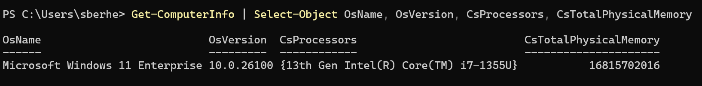
Lab 1, Q2: Downloads
- Download VirtualBox and the
- pre-built Ubuntu VM image
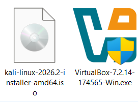
Lab 1, Q3: Import the VM
- Install VirtualBox, import
- the .ova (2 vCPU, 2GB, 20GB)
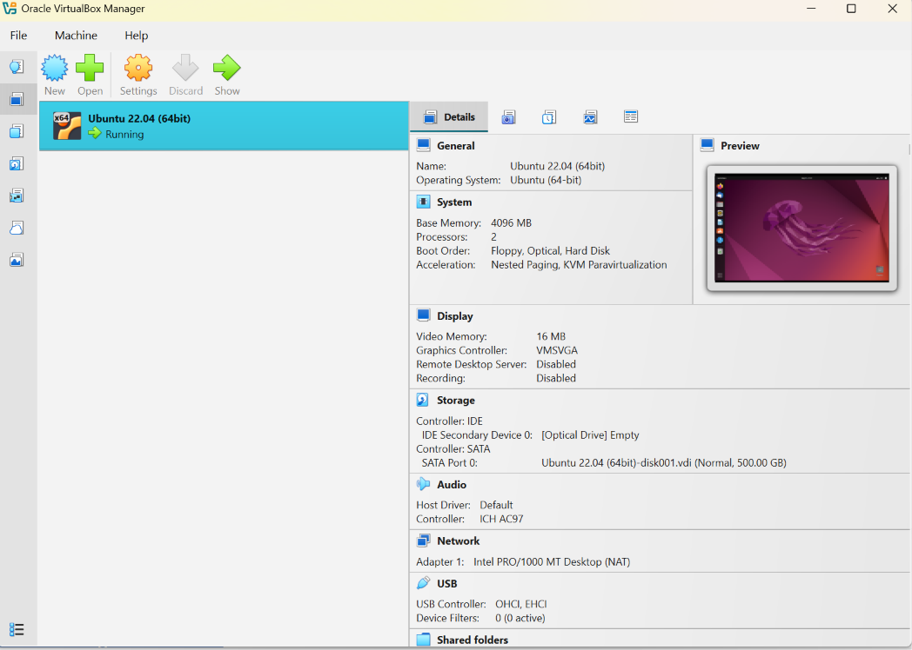
Lab 1, Q4: hostname/whoami
- Right after login, run:
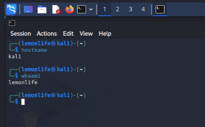
Lab 1, Q5: Add User jdoe
- Deliverable: screenshot
- showing id jdoe
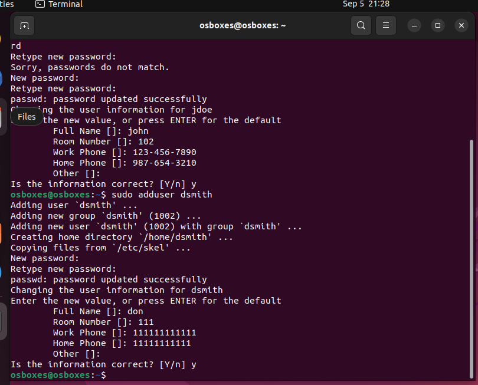
Lab 1, Q6: Add User dsmith
- Deliverable: screenshot
- showing id dsmith
Lab 1, Q7: Create the Group
- Deliverable: screenshot of
- groups jdoe, getent group
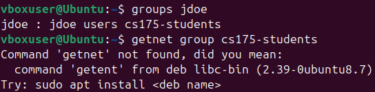
Lab 1, Q8: Project Folder
- Deliverable: ls -ld showing
- owner, group, and 770
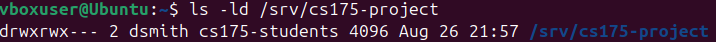
Lab 1, Q9: jdoe Can Write
- Deliverable: command succeeds,
- then ls -l on the new file
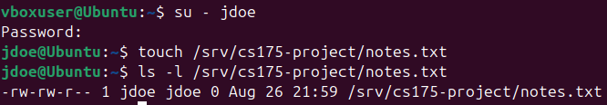
Lab 1, Q10: Outsider Denied
- Deliverable: screenshot of
- the Permission denied error
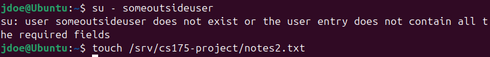
Homework 2, Q1: What Is a CLI?
- Define what a CLI is.
- Why prefer it on servers?
Source: class slides (History of the Command Line)
Homework 2, Q2: Command Syntax
- Name a command's 3 parts.
- Why does order matter?
Source: class slides (Command Syntax & Navigation)
Homework 2, Q3: Why /home Is Optional
- Why is /home optional?
- Why not assume a fixed path?
Read: page 10 (Section 3.8.1), FHS 3.0
Homework 2, Q4: What /tmp Guarantees
- Can /tmp files persist?
- Why does FHS require this?
Read: page 17 (Section 3.18.1), FHS 3.0
Homework 2, Q5: What Lives in /dev
- What lives in /dev?
- Name the 3 required devices.
- What role does each play?
Read: page 7 (3.6.1) & page 39 (6.1.3), FHS 3.0
Homework 2, Q6: What Is /srv For?
- What is /srv for?
- Name an admin-context case.
Read: page 16 (Section 3.17.1), FHS 3.0
Homework 2, Q7: /usr Is Read-Only
- What does read-only mean?
- Why is /var split from /usr?
Read: page 18 (4.1) & page 30 (5.1), FHS 3.0
Homework 2, Q8: /usr vs. /usr/local
- How do they differ?
- Why must software go local?
Read: page 18 (4.2) & page 21 (4.9.1), FHS 3.0
Homework 2, Q9: What /boot Stores
- What does /boot store?
- Why ready before the kernel?
Read: page 7 (Section 3.5.1), FHS 3.0
Homework 2, Q10: /tmp vs. /var/tmp
- What's the real difference?
- When use each one?
Read: page 17 (3.18.1) & page 38 (5.15.1), FHS 3.0
Lab 2: Library Admin -- Setup
- Kali = your workstation
- Ubuntu VM = library server
- Accts: athomas/pchen/rgarcia
- Groups: circulation/cataloging
⚠️ Apple Silicon Macs: Kali's VirtualBox image is amd64-only and won't run there -- use a CTC 214 lab machine or UTM instead.
Recommended: VirtualBox with a Host-only adapter (so Kali and Ubuntu each get their own IP), not WSL2. Source: VirtualBox manual, Virtual Networking
Lab 2, Q1: Import the Kali VM
- Download the Kali VM image.
- Import it into VirtualBox.
Lab 2, Q2: Create the 3 Accounts
- Create athomas.
- Create pchen.
- Create rgarcia.
Lab 2, Q3: Create the 2 Groups
- Create circulation-staff.
- Create cataloging-staff.
Lab 2, Q4: Assign Staff to Groups
- Add athomas to circulation.
- Add pchen to cataloging.
- Add rgarcia to cataloging.
Lab 2, Q5: Give rgarcia Sudo
- rgarcia leads Cataloging.
- They need admin rights.
Lab 2, Q6: Secure Circulation
- Create /srv/circulation.
- Restrict it to the group.
Lab 2, Q7: Secure Cataloging
- Create /srv/cataloging.
- Owned by rgarcia's group.
Lab 2, Q8: Clone Catalog Scripts
- Clone the scripts repo.
- Place it in Cataloging.
Lab 2, Q9: pchen Searches Scripts
- pchen finds the .py files.
- Then greps them for isbn.
Lab 2, Q10: Enable SSH on Ubuntu
- Install the SSH server.
- Then start the service.
Lab 2, Q11: Connect From Kali
- athomas logs in remotely.
- Then confirms their identity.
Module 4
Access Control & Auditing
Subjects, Objects, Monitor
- A subject wants to act
- An object is the target
- A monitor checks every ask
Check: DAC or MAC?
- Owner sets the permission
- Kernel policy overrides it
- Which model is this?
Answer: MAC; the owner's chmod can't override a denied policy
Real Software: PAM
- Pluggable Auth Modules
- Plugs auth into login, sudo
- Config lives in /etc/pam.d
What Is an ACL?
- Extra rules past owner/group
- Attached to the file itself
- Names more than 3 parties
ACL vs. DAC vs. RBAC
- DAC: owner sets one triplet
- ACL: DAC plus named extras
- RBAC: groups define the role
Dining Hall: The Problem
- Kitchen group owns the file
- Purchasing needs read-only
- Group membership is too broad
Dining Hall: After ACL
- One ACL rule solves it
- Owner and group untouched
- Revoke later with setfacl -x
Not Installed by Default
- getfacl/setfacl need a pkg
- Debian/Ubuntu: apt install acl
- Kali has it too
See a File's Full ACL
- Shows owner, group, extras
- Base three print by default
- Empty means no ACL yet
⚠️ Uses ~/report.txt on purpose: WSL's Windows-mounted drives (/mnt/c/...) don't support ACLs, no matter which directory you happen to be in.
See a File's Full ACL
Grant One More Person
- -m modifies the ACL
- u:name:perms adds a rule
- Owner and group untouched
Grant One More Person
Questions?
Users, Groups & sudo
Why Not Log In as root?
- root can do anything at all
- One mistake, no undo
- sudo logs who did what
Who Am I Right Now?
- Prints your effective user
- Useful inside scripts
- Differs once you sudo
Who Am I Right Now?
Switching Identity: su
- su alone targets root
- su - name loads their shell
- Needs that user's password
Switching Identity: su
Reading a sudoers Line
- Who: a user or %group
- Where: ALL hosts
- As whom, running what
Editing sudoers Safely
- visudo locks the file
- Checks syntax before saving
- Never edit sudoers directly
Editing sudoers Safely
What Can I Run?
- Lists your sudo rules
- Shows allowed commands
- Good first debugging step
What Can I Run?
Word Origin: "sudo"
su
- already meant "switch user"
do
- "do" this one thing as them
Read aloud as "superuser do": run one command with another user's privilege.
Check: sudo vs. su
- sudo: one command, logged
- su: a whole new shell
- Which fits a backup script?
Answer: sudo; it runs just that script and records who ran it
Running as Someone Else
- -u picks the target user
- Still needs a sudoers rule
- Not always root
Running as Someone Else
Managing Group Membership
- -a adds, -d removes
- Cleaner than usermod -aG
- Confirm with groups
Managing Group Membership
Questions?
Questions?
Why Audit?
- Prevention can still fail
- Logs show who did what
- Append-only, hard to change
- Needed for compliance
The AAA Model, Revisited
- Authentication: who you are
- Authorization: what you may do
- Accounting: what you did
Who Requires Audit Logs?
- FERPA: student records
- PCI-DSS: payment data
- NIST 800-53: federal systems
Frameworks That Require It
- Each names what to log
- None specifies the tool
- auditd can satisfy any of them
| Framework | Protects |
| FERPA | Student education records |
| PCI-DSS | Card payment data |
| NIST SP 800-53 | Federal information systems |
Who's On Right Now?
- Shows logged-in sessions
- Works on Kali and Ubuntu
- No install needed
Who's On Right Now?
What Is Everyone Doing?
- Adds idle time and load
- WHAT column shows the shell
- Good first audit glance
What Is Everyone Doing?
Word Origin: "Audit"
audire
- Latin: to hear
-it
- one who listens, examines
An auditor originally "heard" accounts read aloud; auditd listens to the kernel instead.
Check: What's in the Log?
- Who did it
- What they did, and when
- Not: their plaintext password
Answer: who/what/when belong in the log; secrets like passwords never do
Questions?
Auditing with auditd
History of Linux Auditing
- Orange Book requires it, 1985
- Kernel merge came in 2004
- Standard on RHEL today
What auditd Watches
- System calls, by rule
- File reads, writes, changes
- Logins and privilege use
Installing auditd
- Not on Ubuntu by default
- One package, one service
- Enable it to start logging
Is It Running?
- systemctl checks any service
- Look for active (running)
- Same command, any daemon
Is It Running?
Watch a File or Folder
- -w picks the path
- -p picks write/attribute
- -k tags it for search
Watch a File or Folder
Finding an Event
- -k matches the rule's tag
- Prints every matching event
- Fastest way to check a rule
Finding an Event
A Readable Summary
- -f: file-access events
- -i: interpret uid/gid names
- Easier to skim than raw logs
A Readable Summary
Reading the Raw Log
- -f follows new lines live
- Same log ausearch reads
- Useful while testing a rule
Reading the Raw Log
Persisting Rules
- Plain rules vanish on reboot
- Save them as a .rules file
- augenrules loads them all
Persisting Rules
The System Journal Too
- journalctl reads systemd logs
- -u filters to one service
- Useful alongside auditd
The System Journal Too
Reading an Audit Line
- type=PATH: what happened
- name=: which file
- key=: which rule matched
Word Origin: "Audit Trail"
trail
- a track left behind
audit
- the examination, as above
A trail you can follow after the fact: each event links to the one before it in time.
Check: Add or Search?
- Add a new watch rule
- Search by that rule's key
- auditctl, or ausearch?
Answer: auditctl -w adds the rule; ausearch -k finds events it logged
Questions?
Practice Lab
Scenario: Registrar Server
- /srv/registrar holds records
- Staff need a narrow sudo rule
- Every write must be logged
Step 1: Make the Group
- One group for registrar staff
- groupadd needs sudo
- Adds no members yet
Step 1: Make the Group
Step 2: Grant One Script
- Not full root, one script only
- NOPASSWD skips the prompt
- Whole group inherits it
Step 2: Grant One Script
Step 3: Turn On Auditing
- Install, then enable it
- --now starts it immediately
- Survives the next reboot too
Step 3: Turn On Auditing
Step 4: Watch the Folder
- -p wa: writes and attributes
- -k names the rule
- Rule applies immediately
Step 4: Watch the Folder
Step 5: Trigger and Confirm
- Create a file to test it
- Search by the rule's key
- You should see the write
Step 5: Trigger and Confirm
Check: Who Can Run It?
- Group registrar has the rule
- bob is not in that group
- Can bob run the script?
Answer: no; only members of registrar inherit the sudoers rule
Step 6: Verify with ACLs
- Confirm the group can write
- getfacl shows every rule
- Compare to your sudoers line
Step 6: Verify with ACLs
Deliverables
- A groupadd + visudo screenshot
- auditctl -l showing your rule
- ausearch output for one write